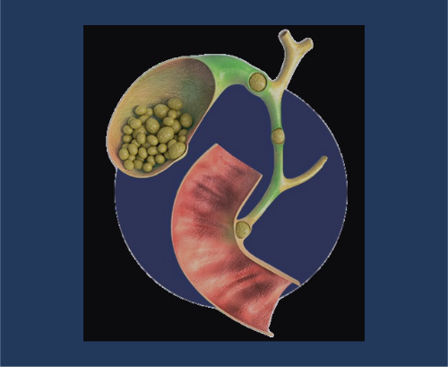
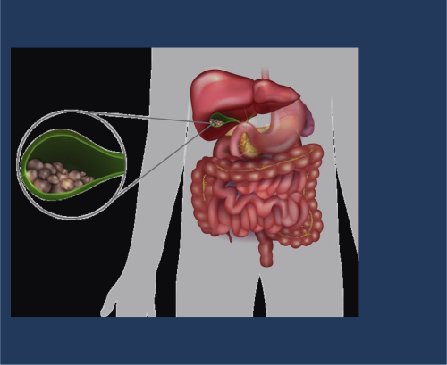

üëÖ Sistema Digestivo
Trastornos de la Motilidad y del Tránsito Digestivo
1. Definición
Los trastornos de la motilidad y del tránsito digestivo comprenden un grupo heterogéneo de alteraciones caracterizadas por anomalías en la contracción muscular coordinada, la propulsión y el tránsito del contenido a lo largo del tubo digestivo. Estos trastornos pueden afectar cualquier segmento del tracto gastrointestinal (esófago, estómago, intestino delgado, colon) y manifestarse como hipermotilidad, hipomotilidad o motilidad descoordinada.
2. Fisiopatología
La motilidad gastrointestinal normal depende de la integridad y coordinación de varios componentes:
1. Sistema nervioso entérico:
Red neuronal intrínseca del tubo digestivo que coordina la motilidad, también conocida como "segundo cerebro".
Plexo mientérico (Auerbach): Regula principalmente la contracción muscular.
Plexo submucoso (Meissner): Regula la secreción y absorción.
2. Sistema nervioso autónomo:
Parasimpático (vago): Generalmente estimula la motilidad.
Simpático: Generalmente inhibe la motilidad.
3. Células intersticiales de Cajal:
Marcapasos del tubo digestivo que generan ondas lentas de despolarización.
4. Musculatura lisa:
Organizada en capas circulares y longitudinales.
5. Complejos mioeléctricos migratorios (CMM):
Patrones cíclicos de actividad eléctrica que regulan la motilidad en ayuno.
Los trastornos pueden originarse por alteraciones en:
Neuropatías: Daño al sistema nervioso entérico o autónomo (diabetes, esclerodermia, Parkinson).
Miopatías: Alteraciones de la musculatura lisa (distrofias musculares, amiloidosis).
Alteraciones de las células intersticiales de Cajal: Disminución o disfunción.
Desequilibrios hormonales: Alteraciones en hormonas gastrointestinales (motilina, grelina, CCK).
Inflamación: Mediadores inflamatorios que alteran la función neuromuscular.
Factores psicosociales: Estrés, ansiedad y depresión que alteran el eje cerebro-intestino.
3. Epidemiología
La prevalencia varía según el trastorno específico.
El síndrome de intestino irritable afecta al 10-15% de la población mundial.
La dispepsia funcional afecta al 15-20% de la población.
El estreñimiento crónico afecta al 15% de la población occidental.
Mayor prevalencia en mujeres para la mayoría de los trastornos funcionales.
Factores de riesgo: edad avanzada, sexo femenino, estrés crónico, antecedentes de cirugía abdominal, enfermedades neurológicas, trastornos endocrinos, medicamentos (opioides, anticolinérgicos).
4. Cuadro Clínico
Los síntomas varían según el segmento afectado:
Esófago:
Disfagia (dificultad para tragar)
Odinofagia (dolor al tragar)
Regurgitación
Pirosis (acidez)
Dolor torácico no cardíaco
Estómago:
Saciedad precoz
Plenitud postprandial
Náuseas y vómitos
Dolor epigástrico
Pérdida de peso
Intestino delgado y colon:
Distensión abdominal
Dolor abdominal
Cambios en el hábito intestinal (diarrea, estreñimiento o alternancia)
Urgencia defecatoria
Sensación de evacuación incompleta
Flatulencia excesiva
Borborigmos
5. Tratamiento Farmacológico
Tratamiento médico (farmacológico):
Grupo farmacológico
Fármaco
Dosis
Vía
Frecuencia
Procinéticos
Metoclopramida
5-10 mg
Oral
3 veces/día
Domperidona
10 mg
Oral
3 veces/día
Cinitaprida
1 mg
Oral
3 veces/día
Antiespasmódicos
Butilescopolamina
10-20 mg
Oral
3-4 veces/día
Mebeverina
135-200 mg
Oral
3 veces/día
Otilonio
40 mg
Oral
2-3 veces/día
Laxantes
Polietilenglicol
17-34 g
Oral
1 vez/día
Lactulosa
10-20 g
Oral
1-2 veces/día
Bisacodilo
5-10 mg
Oral
1 vez/día
Antidiarreicos
Loperamida
2-4 mg
Oral
1-4 veces/día
Racecadotrilo
100 mg
Oral
3 veces/día
Neuromoduladores
Amitriptilina
10-50 mg
Oral
1 vez/día
Duloxetina
30-60 mg
Oral
1 vez/día
Agonistas 5-HT4
Prucaloprida
1-2 mg
Oral
1 vez/día
Antagonistas 5-HT3
Ondansetrón
4-8 mg
Oral
2-3 veces/día
Secretagogos
Linaclotida
290 μg
Oral
1 vez/día
Lubiprostona
8-24 μg
Oral
2 veces/día
6. Tratamiento Nutricional
Objetivos dietoterapéuticos:
Mejorar los síntomas y la calidad de vida.
Normalizar el tránsito intestinal.
Reducir la distensión y el dolor abdominal.
Mantener un adecuado estado nutricional.
Identificar y manejar intolerancias alimentarias específicas.
Macronutrientes clave:
Fibra: Individualizar según el trastorno:
Estreñimiento: Aumentar fibra soluble gradualmente (20-30 g/día)
Diarrea: Moderar fibra insoluble, aumentar fibra soluble
Distensión: Ajustar tipo y cantidad de fibra según tolerancia
Líquidos: 2-2.5 L/día para favorecer el tránsito intestinal adecuado.Grasas: Moderar en caso de vaciamiento gástrico retardado o malabsorción.Proteínas: Mantener aporte adecuado (1-1.2 g/kg/día).
Recomendaciones específicas:
Patrón de alimentación:
Comidas frecuentes y de volumen reducido (5-6 al día).
Masticar adecuadamente y comer despacio.
Mantener horarios regulares de comidas.
Para trastornos de motilidad esofágica:
Modificar consistencia según severidad (dieta blanda, semisólida o líquida).
Evitar alimentos secos o fibrosos.
Consumir líquidos durante las comidas para facilitar el tránsito.
Para gastroparesia:
Dieta baja en grasas y fibra insoluble.
Evitar alimentos ricos en fibra insoluble (piel de frutas, vegetales crudos).
Preferir alimentos de fácil digestión.
Evitar bebidas carbonatadas y alcohol.
Para síndrome de intestino irritable:
Considerar dieta baja en FODMAPs en casos seleccionados.
Identificar alimentos desencadenantes mediante diario alimentario.
Limitar cafeína, alcohol, grasas y alimentos muy condimentados.
Valorar sensibilidad al gluten no celíaca en algunos pacientes.
Para estreñimiento crónico:
Aumentar gradualmente el consumo de fibra soluble.
Asegurar hidratación adecuada.
Incluir alimentos con efecto laxante natural (kiwi, ciruelas, semillas de lino).
Establecer un horario regular para la defecación.
Para diarrea crónica:
Limitar fibra insoluble, cafeína y alcohol.
Evitar sorbitol y otros edulcorantes artificiales.
Valorar intolerancia a la lactosa, fructosa o histamina.
Cocinar los vegetales para mejorar su tolerancia.
Trastornos de las Secreciones Gástrica e Intestinal
1. Definición
Los trastornos de las secreciones gástrica e intestinal comprenden un grupo de alteraciones caracterizadas por anomalías en la producción, composición o regulación de las secreciones digestivas. Estas secreciones incluyen ácido clorhídrico, pepsinógeno, factor intrínseco, bicarbonato, enzimas pancreáticas, bilis y moco, entre otras. Los trastornos pueden manifestarse como hipersecreción, hiposecreción o alteración cualitativa de estas sustancias, afectando los procesos de digestión y absorción de nutrientes.
2. Fisiopatología
Las secreciones digestivas están reguladas por mecanismos complejos:
1. Secreción gástrica:
Células parietales: Secretan ácido clorhídrico (HCl) y factor intrínseco.
Células principales: Secretan pepsinógeno (precursor de pepsina).
Células G: Secretan gastrina, que estimula la secreción ácida.
Células D: Secretan somatostatina, que inhibe la secreción ácida.
Regulación: Neural (vago), hormonal (gastrina, histamina, somatostatina) y paracrina.
2. Secreción pancreática:
Células acinares: Secretan enzimas digestivas (amilasa, lipasa, proteasas).
Células ductales: Secretan bicarbonato para neutralizar el ácido gástrico.
Regulación: Secretina (estimula bicarbonato) y colecistoquinina (estimula enzimas).
3. Secreción biliar:
Hepatocitos: Sintetizan y secretan bilis (sales biliares, colesterol, fosfolípidos).
Vesícula biliar: Concentra y almacena bilis.
Regulación: Colecistoquinina (contracción vesicular) y secretina.
4. Secreción intestinal:
Células caliciformes: Secretan moco protector.
Células de Paneth: Secretan péptidos antimicrobianos.
Enterocitos: Secretan agua y electrolitos.
Regulación: Sistema nervioso entérico, hormonas y mediadores locales.
Los trastornos pueden originarse por:
Alteraciones genéticas: Fibrosis quística (secreción pancreática), síndrome de Zollinger-Ellison (hipersecreción ácida).
Infecciones: Helicobacter pylori (alteración de secreción ácida).
Autoinmunidad: Gastritis autoinmune (hiposecreción ácida), pancreatitis autoinmune.
Inflamación crónica: Pancreatitis crónica, colangitis esclerosante.
Obstrucción: Cálculos biliares, estenosis pancreáticas o biliares.
Fármacos: IBP (inhibidores de bomba de protones), anticolinérgicos.
Cirugía: Gastrectomía, vagotomía, resección intestinal.
3. Epidemiología
La hipersecreción ácida afecta al 10-20% de la población occidental.
La insuficiencia pancreática exocrina está presente en el 85-90% de los pacientes con pancreatitis crónica.
La prevalencia de aclorhidria aumenta con la edad (10-30% en mayores de 60 años).
La malabsorción de sales biliares afecta al 30-50% de los pacientes con resección ileal o enfermedad de Crohn ileal.
Factores de riesgo: edad avanzada, infección por H. pylori, consumo crónico de alcohol, tabaquismo, uso prolongado de IBP, enfermedades autoinmunes.
4. Cuadro Clínico
Alteraciones de la secreción ácida:
Hipersecreción:
Pirosis (acidez)
Regurgitación ácida
Dolor epigástrico
Úlceras pépticas recurrentes
Hiposecreción:
Dispepsia no ulcerosa
Sobrecrecimiento bacteriano intestinal
Anemia por deficiencia de vitamina B12
Mayor susceptibilidad a infecciones entéricas
Alteraciones de la secreción pancreática:
Esteatorrea (heces grasas)
Pérdida de peso
Distensión abdominal
Flatulencia
Deficiencias de vitaminas liposolubles (A, D, E, K)
Hiperglucemia (en casos avanzados)
Alteraciones de la secreción biliar:
Esteatorrea
Prurito
Ictericia
Heces acólicas
Orina colúrica
Malabsorción de vitaminas liposolubles
Alteraciones de la secreción intestinal:
Diarrea acuosa
Deshidratación
Desequilibrios electrolíticos
Malnutrición
5. Tratamiento Farmacológico
Tratamiento médico (farmacológico):
Grupo farmacológico
Fármaco
Dosis
Vía
Frecuencia
Inhibidores bomba protones
Omeprazol
20-40 mg
Oral
1 vez/día
Esomeprazol
20-40 mg
Oral
1 vez/día
Pantoprazol
20-40 mg
Oral
1 vez/día
Antagonistas H2
Ranitidina
150-300 mg
Oral
1-2 veces/día
Famotidina
20-40 mg
Oral
1-2 veces/día
Antiácidos
Hidróxido Al/Mg
10-20 ml
Oral
3-4 veces/día
Enzimas pancreáticas
Pancreatina
25.000-40.000 UI
Oral
Con cada comida
Pancrelipasa
10.000-25.000 UI
Oral
Con cada comida
Ácidos biliares
Ácido ursodesoxicólico
8-15 mg/kg
Oral
1-2 veces/día
Secuestradores sales biliares
Colestiramina
4-16 g
Oral
1-2 veces/día
Colesevelam
625-1875 mg
Oral
2 veces/día
Antidiarreicos
Loperamida
2-4 mg
Oral
1-4 veces/día
Racecadotrilo
100 mg
Oral
3 veces/día
Probióticos
Varias cepas
Variable
Oral
1-2 veces/día
6. Tratamiento Nutricional
Objetivos dietoterapéuticos:
Optimizar la digestión y absorción de nutrientes.
Controlar los síntomas (acidez, diarrea, esteatorrea).
Prevenir o corregir deficiencias nutricionales.
Mantener o recuperar un estado nutricional adecuado.
Adaptar la alimentación a la capacidad digestiva residual.
Macronutrientes clave:
Para hipersecreción ácida:
Proteínas: 15-20% del VCT, preferir fuentes de fácil digestión.
Lípidos: 25-30% del VCT, evitar frituras y grasas saturadas.
Carbohidratos: 50-60% del VCT, preferir complejos.
Para insuficiencia pancreática exocrina:
Proteínas: 15-20% del VCT, asegurar aporte adecuado.
Lípidos: 30-35% del VCT, preferentemente en forma de triglicéridos de cadena media (MCT) en casos severos.
Carbohidratos: 45-55% del VCT, preferir complejos.
Suplementación: Vitaminas liposolubles (A, D, E, K).
Para alteraciones biliares:
Proteínas: 15-20% del VCT.
Lípidos: 20-25% del VCT, reducir en casos de esteatorrea severa.
Carbohidratos: 55-65% del VCT.
Fibra: 20-25 g/día, preferentemente soluble.
Recomendaciones específicas:
Para hipersecreción ácida:
Evitar alimentos que estimulen la secreción ácida: café, alcohol, chocolate, menta, cítricos, tomate.
Fraccionar la alimentación (5-6 comidas/día).
Evitar acostarse inmediatamente después de comer.
Reducir alimentos muy condimentados o picantes.
Limitar bebidas carbonatadas.
Evitar tabaco.
Para hiposecreción ácida:
Asegurar adecuada masticación.
Considerar suplementación con ácido clorhídrico en casos seleccionados.
Vigilar niveles de vitamina B12 y hierro.
Considerar probióticos para prevenir sobrecrecimiento bacteriano.
Para insuficiencia pancreática exocrina:
Coordinar la ingesta de enzimas pancreáticas con las comidas.
Fraccionar la alimentación.
En casos severos, reducir grasas convencionales y usar MCT.
Evitar alcohol y tabaco.
Suplementar vitaminas liposolubles si es necesario.
Dieta hiperproteica e hipercalórica en caso de desnutrición.
Para alteraciones biliares:
Reducir grasas saturadas.
Preferir grasas monoinsaturadas.
Evitar comidas copiosas.
Considerar suplementación con vitaminas liposolubles.
En caso de malabsorción de sales biliares con diarrea, dieta baja en grasas.
Evitar alcohol.
Manifestaciones de la Patología Digestiva
1. Definición
Las manifestaciones de la patología digestiva comprenden un conjunto de signos y síntomas que reflejan alteraciones en la estructura o función del tracto gastrointestinal. Estas manifestaciones son diversas y pueden presentarse de forma aguda o crónica, localizada o difusa, y con diferentes grados de severidad. Incluyen síntomas como dolor abdominal, náuseas, vómitos, alteraciones del tránsito intestinal, hemorragia digestiva, ictericia, entre otros, que pueden ser expresión de múltiples enfermedades digestivas subyacentes.
2. Fisiopatología
Las manifestaciones digestivas resultan de diversos mecanismos fisiopatológicos:
1. Dolor abdominal:
Visceral: Originado por distensión, contracción o isquemia de vísceras huecas; mediado por fibras C no mielinizadas; mal localizado.
Parietal: Originado por irritación del peritoneo parietal; mediado por fibras Aδ mielinizadas; bien localizado.
Referido: Percibido en áreas distantes al órgano afectado debido a convergencia de vías nerviosas.
2. Náuseas y vómitos:
Mediados por el centro del vómito en el bulbo raquídeo.
Desencadenados por estímulos centrales (área postrema) o periféricos (tracto GI).
Implican una secuencia coordinada: salivación, relajación del esfínter esofágico inferior, contracción de músculos abdominales y diafragma.
3. Diarrea:
Osmótica: Por sustancias no absorbibles que retienen agua en la luz intestinal.
Secretora: Por secreción activa de electrolitos y agua.
Inflamatoria: Por daño de la mucosa con exudación de proteínas, sangre y moco.
Motora: Por tránsito acelerado que reduce la absorción.
4. Estreñimiento:
De tránsito lento: Por disminución de la motilidad colónica.
Disfuncional: Por alteración en la coordinación de la defecación.
Mixto: Combinación de los anteriores.
5. Hemorragia digestiva:
Alta: Proximal al ligamento de Treitz (esófago, estómago, duodeno).
Baja: Distal al ligamento de Treitz (yeyuno, íleon, colon, recto).
Manifestada como hematemesis, melena, hematoquecia o sangre oculta en heces.
6. Ictericia:
Prehepática: Por aumento de producción de bilirrubina (hemólisis).
Hepática: Por alteración en la captación o conjugación hepática.
Posthepática: Por obstrucción del flujo biliar.
7. Malabsorción:
Luminal: Déficit de enzimas digestivas o sales biliares.
Mucosa: Daño en enterocitos o reducción de superficie absortiva.
Posabsortiva: Obstrucción linfática o insuficiencia vascular.
3. Epidemiología
Los síntomas gastrointestinales representan el 10-15% de las consultas en atención primaria.
El dolor abdominal es el síntoma digestivo más frecuente (15-25% de la población).
La prevalencia de dispepsia en la población general es del 20-40%.
La diarrea aguda afecta a cada adulto 1-2 veces al año en países desarrollados.
El estreñimiento crónico afecta al 15-20% de la población occidental.
La hemorragia digestiva alta tiene una incidencia de 50-150 casos/100,000 habitantes/año.
La ictericia está presente en el 2-5% de los ingresos hospitalarios.
Factores de riesgo: edad avanzada, medicamentos (AINE, antibióticos), dieta inadecuada, sedentarismo, estrés, tabaquismo, alcohol.
4. Cuadro Clínico
Dolor abdominal:
Características: Localización, irradiación, intensidad, carácter, factores agravantes y atenuantes.
Tipos: Cólico (intermitente), continuo, sordo, punzante, urente.
Patrones: Úlcera péptica (rítmico), cólico biliar (intenso, episódico), pancreatitis (continuo, irradiado a espalda).
Náuseas y vómitos:
Características del vómito: Alimentario, bilioso, fecaloideo, hemático (hematemesis).
Temporalidad: Matutino (embarazo, alcoholismo), postprandial inmediato (psicógeno), tardío (obstrucción).
Síntomas asociados: Dolor, fiebre, diarrea, cefalea, vértigo.
Alteraciones del tránsito intestinal:
Diarrea: Acuosa, grasa, inflamatoria, número y volumen de deposiciones.
Estreñimiento: Frecuencia, consistencia, esfuerzo defecatorio, sensación de evacuación incompleta.
Alternancia: Patrón característico del síndrome de intestino irritable.
Hemorragia digestiva:
Hematemesis: Vómito de sangre fresca o "posos de café".
Melena: Heces negras, alquitranadas, malolientes.
Hematoquecia: Emisión de sangre roja por el recto.
Síntomas de hipovolemia: Taquicardia, hipotensión, palidez, síncope.
Ictericia:
Coloración amarillenta de piel y mucosas.
Prurito (en colestasis).
Acolia (heces pálidas) y coluria (orina oscura) en obstrucción biliar.
Síndrome de malabsorción:
Pérdida de peso
Diarrea crónica
Esteatorrea
Distensión abdominal
Deficiencias nutricionales específicas
Otros síntomas digestivos:
Pirosis (acidez)
Regurgitación
Disfagia (dificultad para tragar)
Odinofagia (dolor al tragar)
Distensión abdominal
Flatulencia
Tenesmo (sensación de evacuación incompleta)
5. Tratamiento Farmacológico
El tratamiento farmacológico varía según la manifestación específica:
Manifestación
Grupo farmacológico
Fármaco
Dosis
Vía
Frecuencia
Dolor abdominal
Antiespasmódicos
Butilescopolamina
10-20 mg
Oral
3-4 veces/día
Analgésicos
Paracetamol
500-1000 mg
Oral
3-4 veces/día
IBP
Omeprazol
20-40 mg
Oral
1 vez/día
Náuseas/Vómitos
Antieméticos
Metoclopramida
10 mg
Oral/IV
3 veces/día
Ondansetrón
4-8 mg
Oral/IV
2-3 veces/día
Domperidona
10 mg
Oral
3 veces/día
Diarrea
Antidiarreicos
Loperamida
2-4 mg
Oral
1-4 veces/día
Racecadotrilo
100 mg
Oral
3 veces/día
Antibióticos
Rifaximina
200 mg
Oral
3 veces/día
Estreñimiento
Laxantes osmóticos
Polietilenglicol
17-34 g
Oral
1 vez/día
Lactulosa
10-20 g
Oral
1-2 veces/día
Laxantes estimulantes
Bisacodilo
5-10 mg
Oral
1 vez/día
Senósidos
12-36 mg
Oral
1 vez/día
Hemorragia
IBP
Pantoprazol
80 mg
IV
Bolo + infusión
Vasoconstrictores
Terlipresina
2 mg
IV
Cada 4-6 h
Hemostáticos
Ácido tranexámico
1 g
IV
3-4 veces/día
Ictericia
Colerético
Ácido ursodesoxicólico
8-15 mg/kg
Oral
1-2 veces/día
Antipruriginosos
Colestiramina
4 g
Oral
1-2 veces/día
Malabsorción
Enzimas
Pancreatina
25.000-40.000 UI
Oral
Con comidas
Vitaminas
Complejo B, A, D, E, K
Variable
Oral
1 vez/día
6. Tratamiento Nutricional
Objetivos dietoterapéuticos generales:
Aliviar los síntomas digestivos específicos.
Mantener o recuperar un adecuado estado nutricional.
Prevenir complicaciones relacionadas con la malnutrición.
Adaptar la alimentación a la capacidad digestiva y absortiva.
Corregir deficiencias nutricionales específicas.
Recomendaciones específicas según manifestación:
Para dolor abdominal:
Identificar y evitar alimentos desencadenantes.
Fraccionar la alimentación (5-6 comidas pequeñas).
Evitar alimentos flatulentos (coles, legumbres, cebolla cruda).
Reducir grasas en caso de dolor biliar o pancreático.
Limitar alimentos muy condimentados, café, alcohol y bebidas carbonatadas.
Técnicas culinarias suaves (hervido, vapor, horno).
Temperatura moderada de los alimentos (ni muy calientes ni muy fríos).
Para náuseas y vómitos:
Dieta fraccionada y de fácil digestión.
Comenzar con líquidos claros y progresar según tolerancia.
Preferir alimentos fríos o a temperatura ambiente.
Evitar olores intensos durante la preparación.
Separar sólidos de líquidos (tomar líquidos entre comidas).
Consumir alimentos secos (tostadas, galletas) al despertar.
Evitar alimentos grasos, muy dulces o muy condimentados.
Alimentos con jengibre pueden ayudar a reducir náuseas.
Para diarrea:
Asegurar hidratación adecuada (soluciones de rehidratación oral).
Dieta astringente: arroz, zanahoria cocida, manzana sin piel, plátano maduro.
Evitar lactosa en caso de intolerancia secundaria.
Limitar alimentos ricos en fibra insoluble, grasas, cafeína y alcohol.
Cocinar los alimentos (evitar crudos).
Reintroducción progresiva de alimentos según tolerancia.
Considerar probióticos (Lactobacillus, Saccharomyces boulardii).
Para estreñimiento:
Aumentar gradualmente la fibra dietética (25-30 g/día).
Asegurar adecuada hidratación (2-2.5 L/día).
Incluir alimentos con efecto laxante: ciruelas, kiwi, papaya, semillas de lino.
Consumir yogur natural o alimentos fermentados.
Establecer horario regular para las comidas.
Evitar alimentos astringentes (arroz blanco, membrillo).
Actividad física regular.
Para hemorragia digestiva:
Fase aguda: dieta absoluta o líquidos claros según indicación médica.
Recuperación: dieta progresiva, inicialmente blanda y sin irritantes.
Evitar alimentos muy calientes o muy fríos.
Suplementación con hierro en caso de anemia ferropénica.
Evitar AINE, alcohol y alimentos irritantes gástricos.
Para ictericia:
Dieta baja en grasas en caso de colestasis.
Preferir grasas de origen vegetal.
Suplementación con vitaminas liposolubles (A, D, E, K) en colestasis prolongada.
Fraccionar la alimentación.
Asegurar adecuado aporte proteico (1-1.2 g/kg/día).
Moderar consumo de alimentos ricos en cobre en enfermedad de Wilson.
Para síndrome de malabsorción:
Adaptar según el déficit específico (enzimático, biliar, mucoso).
En insuficiencia pancreática: coordinar enzimas con las comidas.
En enfermedad celíaca: dieta estricta sin gluten.
En malabsorción de lactosa: restricción de lactosa.
Suplementación nutricional según deficiencias específicas.
En casos graves: considerar triglicéridos de cadena media (MCT).
Dieta hiperproteica e hipercalórica en caso de desnutrición
Esofagitis
1. Definición
La esofagitis es la inflamación de la mucosa esofágica que puede ser aguda o crónica. Se caracteriza por la presencia de eritema, edema, erosiones o úlceras en la mucosa esofágica, causando síntomas como pirosis, dolor retroesternal, disfagia y odinofagia. Existen varios tipos según su etiología: esofagitis por reflujo (la más común), esofagitis infecciosa, esofagitis eosinofílica, esofagitis por píldoras, esofagitis por cáusticos y esofagitis por radiación.
2. Fisiopatología
La fisiopatología varía según el tipo de esofagitis:
1. Esofagitis por reflujo (ERGE):
Exposición prolongada de la mucosa esofágica al contenido ácido gástrico.
Disfunción del esfínter esofágico inferior (EEI) que permite el reflujo.
Aclaramiento esofágico deficiente que prolonga el contacto con el ácido.
Retraso del vaciamiento gástrico que aumenta el volumen refluido.
Hipersecreción ácida en algunos casos.
Daño tisular por ácido, pepsina y, en casos de reflujo duodenogástrico, sales biliares.
Respuesta inflamatoria con liberación de citoquinas y quimioquinas.
2. Esofagitis eosinofílica:
Reacción inmunológica mediada por alérgenos alimentarios.
Infiltración de la mucosa por eosinófilos (≥15 eosinófilos/campo de alto poder).
Activación de linfocitos Th2 con liberación de IL-5, IL-13 y eotaxina-3.
Remodelado tisular con fibrosis y disfunción motora secundaria.
3. Esofagitis infecciosa:
Invasión directa de la mucosa por microorganismos (Candida, virus herpes, CMV).
Más frecuente en pacientes inmunocomprometidos.
Destrucción epitelial con formación de úlceras y pseudomembranas.
4. Esofagitis por píldoras:
Contacto directo y prolongado del medicamento con la mucosa.
Daño local por pH extremo o efecto citotóxico directo.
Estasis del medicamento por alteraciones de la motilidad o estenosis.
5. Esofagitis por cáusticos:
Necrosis coagulativa (álcalis) o licuefactiva (ácidos).
Daño transmural con posible perforación.
Fase aguda seguida de cicatrización con estenosis.
6. Esofagitis por radiación:
Daño al DNA celular por radiación ionizante.
Alteración de la microcirculación con isquemia.
Fibrosis progresiva en fase crónica.
3. Epidemiología
La esofagitis por reflujo afecta al 10-20% de la población occidental.
La prevalencia de esofagitis erosiva en pacientes con ERGE es del 30-40%.
La esofagitis eosinofílica tiene una prevalencia de 1-5/10,000 habitantes, con predominio en varones jóvenes (3:1).
La esofagitis infecciosa afecta principalmente a pacientes inmunodeprimidos (30-40% de pacientes con SIDA avanzado).
La esofagitis por píldoras representa el 20-30% de las esofagitis químicas.
Factores de riesgo para esofagitis por reflujo: obesidad, embarazo, hernia hiatal, tabaquismo, alcohol, ciertos medicamentos (anticolinérgicos, calcioantagonistas, nitratos).
4. Cuadro Clínico
Síntomas comunes a todos los tipos:
Pirosis (sensación de quemazón retroesternal)
Dolor torácico/retroesternal
Disfagia (dificultad para tragar)
Odinofagia (dolor al tragar)
Regurgitación
Específicos según tipo:
Esofagitis por reflujo:
Síntomas típicos: pirosis, regurgitación ácida
Síntomas atípicos: tos crónica, disfonía, asma, dolor torácico
Empeoramiento postprandial y en decúbito
Alivio con antiácidos
Esofagitis eosinofílica:
Disfagia como síntoma predominante
Impactación alimentaria frecuente
Dolor torácico no relacionado con la deglución
Síntomas de reflujo refractario a IBP
Antecedentes de atopia (asma, rinitis, dermatitis)
Esofagitis infecciosa:
Odinofagia intensa
Disfagia
Fiebre
En candidiasis: placas blanquecinas adherentes
En infección herpética: vesículas y úlceras dolorosas
Esofagitis por píldoras:
Dolor retroesternal agudo
Odinofagia de inicio súbito
Relación temporal con ingesta de medicamentos
Esofagitis por cáusticos:
Dolor orofaríngeo y retroesternal intenso
Disfagia, odinofagia severa
Sialorrea, vómitos
Lesiones en cavidad oral
Complicaciones: perforación, mediastinitis, estenosis
5. Tratamiento Farmacológico
El tratamiento farmacológico varía según la manifestación específica:
Tipo de esofagitis
Grupo farmacológico
Fármaco
Dosis
Vía
Frecuencia
Por reflujo
IBP
Omeprazol
20-40 mg
Oral
1-2 veces/día
Esomeprazol
20-40 mg
Oral
1 vez/día
Procinéticos
Domperidona
10 mg
Oral
3 veces/día
Antiácidos
Hidróxido Al/Mg
10-20 ml
Oral
3-4 veces/día
Alginatos
Alginato sódico
10-20 ml
Oral
3-4 veces/día
Eosinofílica
IBP
Omeprazol
20-40 mg
Oral
2 veces/día
Corticoides tópicos
Fluticasona
440-880 μg
Inhalado/deglutido
2 veces/día
Budesonida
1 mg
Oral (viscosa)
2 veces/día
Biológicos
Dupilumab
300 mg
SC
Cada 2 semanas
Infecciosa (Candida)
Antifúngicos
Fluconazol
100-200 mg
Oral
1 vez/día
Nistatina
500,000 UI
Oral
4 veces/día
Infecciosa (Viral)
Antivirales
Aciclovir
400 mg
Oral
5 veces/día
Valaciclovir
1 g
Oral
3 veces/día
Por píldoras
IBP
Pantoprazol
40 mg
Oral
1 vez/día
Citoprotectores
Sucralfato
1 g
Oral
4 veces/día
Por cáusticos
Corticoides
Metilprednisolona
1 mg/kg
IV
1-2 veces/día
Antibióticos
Ampicilina/Sulbactam
1.5-3 g
IV
4 veces/día
IBP
Pantoprazol
40 mg
IV
2 veces/día
6. Tratamiento Nutricional
Objetivos dietoterapéuticos:
Reducir los síntomas y mejorar la calidad de vida.
Favorecer la cicatrización de la mucosa esofágica.
Prevenir complicaciones (estenosis, metaplasia).
Mantener un adecuado estado nutricional.
Identificar y evitar desencadenantes específicos.
Recomendaciones específicas según tipo:
Para esofagitis por reflujo:
Modificaciones dietéticas:
Evitar alimentos que relajan el EEI: chocolate, menta, café, alcohol, alimentos grasos.
Limitar alimentos ácidos: cítricos, tomate, vinagre, bebidas carbonatadas.
Evitar comidas copiosas (preferir 5-6 comidas pequeñas).
Reducir el consumo de alimentos muy condimentados.
Mantener peso adecuado (la obesidad aumenta la presión intraabdominal).
Cena ligera y al menos 2-3 horas antes de acostarse.
Modificaciones del estilo de vida:
Elevar la cabecera de la cama 15-20 cm.
Evitar ropa ajustada.
No acostarse inmediatamente después de comer.
Abandonar el tabaco.
Reducir el consumo de alcohol.
Para esofagitis eosinofílica:
Dietas de eliminación:
Dieta de eliminación empírica de 6 alimentos (leche, trigo, huevo, soja, frutos secos, pescado/mariscos).
Dieta de eliminación dirigida por pruebas alérgicas.
Dieta elemental (fórmulas de aminoácidos) en casos refractarios.
Reintroducción secuencial para identificar desencadenantes específicos.
Asegurar adecuado aporte nutricional durante las dietas restrictivas.
Considerar suplementación con calcio y vitamina D si se elimina la leche.
Para esofagitis infecciosa:
Fase aguda: dieta líquida o semisólida según tolerancia.
Alimentos a temperatura ambiente (evitar extremos térmicos).
Evitar alimentos ácidos, picantes o ásperos.
Asegurar adecuada hidratación.
Suplementación nutricional si hay pérdida de peso significativa.
Progresión dietética según mejora de síntomas.
Para esofagitis por píldoras:
Tomar medicamentos con abundante agua (al menos 100 ml).
Ingerir medicamentos en posición erguida.
No acostarse hasta 30 minutos después de tomar medicamentos.
Considerar formas líquidas de medicación en pacientes con disfagia.
Dieta blanda durante la fase aguda.
Para esofagitis por cáusticos:
Fase aguda: nutrición parenteral o enteral por sonda nasoyeyunal según gravedad.
Fase de recuperación: progresión dietética según hallazgos endoscópicos.
Dieta l√≠quida → semis√≥lida → blanda → normal.
Adecuación de la textura en caso de estenosis residual.
Suplementación nutricional en caso de disfagia prolongada.
Hernia Hiatal
1. Definición
La hernia hiatal es una condición anatómica caracterizada por el desplazamiento de una porción del estómago (y ocasionalmente otros órganos abdominales) hacia la cavidad torácica a través del hiato esofágico del diafragma. Se clasifica principalmente en tres tipos: hernia por deslizamiento (tipo I, la más común, 90%), hernia paraesofágica (tipo II) y hernia mixta (tipo III). En casos extremos, puede existir una hernia tipo IV con migración de otros órganos además del estómago.
2. Fisiopatología
La hernia hiatal se desarrolla por alteraciones anatómicas y funcionales:
1. Factores anatómicos:
Debilidad o laxitud de los ligamentos frenoesofágicos.
Aumento del tamaño del hiato esofágico diafragmático.
Acortamiento del esófago (esófago de Barrett, esofagitis crónica).
Alteraciones del ángulo de His (ángulo entre esófago y estómago).
2. Factores funcionales:
Aumento crónico de la presión intraabdominal (obesidad, embarazo, ascitis).
Disminución del tono del esfínter esofágico inferior (EEI).
Alteraciones de la motilidad esofágica.
Envejecimiento con pérdida de elasticidad tisular.
3. Consecuencias fisiopatológicas:
Hernia por deslizamiento (tipo I):
Desplazamiento de la unión gastroesofágica por encima del diafragma.
Disrupción de la barrera antirreflujo natural.
Reducción de la presión del EEI.
Aumento de episodios de reflujo gastroesofágico.
Aclaramiento esofágico deficiente.
Hernia paraesofágica (tipo II):
Unión gastroesofágica en posición normal.
Herniación de fondo gástrico adyacente al esófago.
Riesgo de volvulación, estrangulación o isquemia.
Compresión pulmonar en hernias grandes.
Hernia mixta (tipo III):
Combinación de hernia por deslizamiento y paraesofágica.
Mayor riesgo de complicaciones mecánicas.
Síntomas mixtos de reflujo y compresión.
4. Complicaciones:
Esofagitis por reflujo crónico.
Estenosis péptica.
Esófago de Barrett.
Anemia por sangrado crónico.
Volvulación gástrica.
Estrangulación e isquemia.
Síntomas respiratorios por compresión.
3. Epidemiología
La prevalencia global se estima en 10-80% de la población, aumentando con la edad.
Las hernias por deslizamiento (tipo I) representan el 90% de los casos.
Las hernias paraesofágicas (tipos II-IV) constituyen el 5-10% restante.
Mayor prevalencia en personas mayores de 50 años.
Relación mujer:hombre de aproximadamente 2:1.
Factores de riesgo: edad avanzada, obesidad, embarazos múltiples, cirugía abdominal previa, EPOC con tos crónica, estreñimiento crónico.
El 30-50% de los pacientes con hernia hiatal presentan síntomas de reflujo gastroesofágico.
Solo el 5-15% de las hernias hiatales son sintomáticas.
4. Cuadro Clínico
Hernia por deslizamiento (tipo I):
Asintomática en muchos casos.
Síntomas de reflujo gastroesofágico:
Pirosis (acidez retroesternal).
Regurgitación ácida.
Disfagia ocasional.
Dolor torácico no cardíaco.
Síntomas extraesofágicos: tos crónica, ronquera, asma.
Hernia paraesofágica (tipo II) y mixta (tipo III):
Sensación de plenitud o presión torácica postprandial.
Dolor retroesternal o epigástrico.
Disfagia progresiva.
Saciedad precoz.
Náuseas y vómitos.
Síntomas respiratorios (disnea, aspiración).
Anemia ferropénica por sangrado crónico.
Síntomas cardíacos (palpitaciones, dolor torácico).
Complicaciones agudas:
Volvulación gástrica: dolor intenso, vómitos improductivos, imposibilidad de pasar sonda nasogástrica.
Estrangulación: dolor severo, signos de sepsis, shock.
Perforación: dolor súbito, neumoperitoneo, signos de sepsis.
Hallazgos en exploración física:
Generalmente normal en hernias pequeñas.
Ruidos hidroaéreos en tórax en hernias grandes.
Disminución de ruidos respiratorios basales.
Signos de anemia en casos de sangrado crónico.
5. Tratamiento Farmacológico
El tratamiento farmacológico se dirige principalmente a controlar los síntomas de reflujo asociados:
Grupo farmacológico
Fármaco
Dosis
Vía
Frecuencia
IBP
Omeprazol
20-40 mg
Oral
1-2 veces/día
Esomeprazol
20-40 mg
Oral
1 vez/día
Pantoprazol
40 mg
Oral
1 vez/día
Antagonistas H2
Ranitidina
150 mg
Oral
2 veces/día
Famotidina
20 mg
Oral
2 veces/día
Procinéticos
Domperidona
10 mg
Oral
3 veces/día
Cinitaprida
1 mg
Oral
3 veces/día
Antiácidos
Hidróxido Al/Mg
10-20 ml
Oral
3-4 veces/día
Alginatos
Alginato sódico
10-20 ml
Oral
3-4 veces/día
6. Tratamiento Quirúrgico
Indicado en hernias paraesofágicas sintomáticas, hernias tipo III y IV, y hernias tipo I con síntomas refractarios al tratamiento médico.
Técnicas: funduplicatura de Nissen (360°), funduplicatura de Toupet (270°), funduplicatura de Dor (180°).
Abordaje: laparoscópico (preferente), abierto o transtorácico.
7. Tratamiento Nutricional
Objetivos dietoterapéuticos:
Reducir los síntomas de reflujo gastroesofágico.
Prevenir la distensión gástrica que puede empeorar la herniación.
Evitar el aumento de la presión intraabdominal.
Mantener o lograr un peso corporal adecuado.
Prevenir complicaciones como esofagitis, estenosis o Barrett.
Recomendaciones específicas:
Patrón alimentario:
Fraccionar la alimentación (5-6 comidas pequeñas al día).
Masticar adecuadamente y comer despacio.
Mantener posición erguida durante y después de las comidas.
Esperar 2-3 horas después de cenar antes de acostarse.
Evitar comidas copiosas, especialmente en la cena.
Alimentos y bebidas a limitar o evitar:
Relajantes del esfínter esofágico inferior:
Chocolate
Menta y hierbabuena
Café (incluso descafeinado)
Té negro
Bebidas alcohólicas
Alimentos grasos (frituras, salsas cremosas)
Cebolla y ajo crudos
Irritantes de la mucosa esofágica:
Cítricos y jugos cítricos
Tomate y derivados
Vinagre y alimentos encurtidos
Bebidas carbonatadas
Alimentos muy condimentados o picantes
Alimentos muy ácidos
Técnicas culinarias recomendadas:
Cocción al vapor, hervido, horno, papillote.
Evitar frituras y rebozados.
Preparaciones con poca grasa añadida.
Temperatura moderada de los alimentos (ni muy calientes ni muy fríos).
Recomendaciones para casos específicos:
Hernia hiatal con disfagia:
Adaptar la textura de los alimentos según el grado de disfagia.
Preferir alimentos húmedos y de fácil masticación.
Evitar alimentos secos o fibrosos.
Utilizar salsas suaves para facilitar la deglución.
Hernia hiatal con anemia:
Aumentar el consumo de alimentos ricos en hierro (carnes rojas magras, legumbres).
Combinar con alimentos ricos en vitamina C para mejorar absorción.
Considerar suplementación con hierro si está indicado médicamente.
Modificaciones del estilo de vida:
Control de peso: pérdida de peso en caso de sobrepeso/obesidad.
Elevar la cabecera de la cama 15-20 cm.
Evitar ropa ajustada en abdomen.
Evitar ejercicios que aumenten la presión intraabdominal.
Abandonar el tabaco.
Técnicas de manejo del estrés (el estrés puede aumentar la sintomatología).
Disfagia
1. Definición
La disfagia es la dificultad o imposibilidad para la deglución normal de líquidos y/o sólidos. Representa un síntoma, no una enfermedad en sí misma, y puede ser manifestación de múltiples patologías. Se clasifica en dos grandes grupos: disfagia orofaríngea (o alta, relacionada con alteraciones en la transferencia del bolo desde la boca a la faringe y esófago proximal) y disfagia esofágica (o baja, relacionada con alteraciones en el transporte del bolo a través del esófago). También puede clasificarse según su etiología en mecánica/obstructiva o motora/funcional.
2. Fisiopatología
La deglución normal es un proceso complejo que involucra más de 30 músculos y varios pares craneales, dividido en fases:
Fase oral preparatoria: Voluntaria, incluye masticación y formación del bolo.
Fase oral propulsiva: Voluntaria, propulsión del bolo hacia la faringe.
Fase faríngea: Involuntaria, desencadena el reflejo deglutorio.
Fase esofágica: Involuntaria, transporte del bolo por peristalsis.
La disfagia puede resultar de alteraciones en cualquiera de estas fases:
Disfagia orofaríngea (alta):
Causas neurológicas: Accidente cerebrovascular, enfermedad de Parkinson, esclerosis múltiple, esclerosis lateral amiotrófica, miastenia gravis.
Causas musculares: Miopatías, distrofia oculofaríngea, dermatomiositis.
Causas estructurales: Divertículo de Zenker, membranas, neoplasias, osteofitos cervicales.
Causas inflamatorias: Amigdalitis, faringitis, abscesos.
Disfagia esofágica (baja):
Causas obstructivas/mecánicas:
Intrínsecas: Cáncer esofágico, estenosis péptica, anillos/membranas, esofagitis eosinofílica.
Extrínsecas: Compresión vascular, masas mediastínicas, adenopatías.
Causas motoras/funcionales:
Trastornos de la motilidad: Acalasia, espasmo esofágico difuso, esófago en cascanueces.
Esclerodermia con afectación esofágica.
ERGE severo con disfunción motora secundaria.
Mecanismos fisiopatológicos específicos:
Neurológicos: Alteración en la coordinación neuromuscular, debilidad muscular, pérdida del reflejo deglutorio.
Obstructivos: Reducción del diámetro luminal, rigidez de la pared esofágica.
Motores: Peristalsis ineficaz, hipercontractilidad, hipocontractilidad, relajación incompleta del EEI.
Inflamatorios: Edema, fibrosis, dolor que inhibe la deglución.
3. Epidemiología
Afecta aproximadamente al 8% de la población general.
La prevalencia aumenta con la edad: 10-15% en mayores de 65 años y hasta 40-60% en ancianos institucionalizados.
La disfagia orofaríngea representa el 80% de los casos en ancianos.
La disfagia esofágica es más frecuente en adultos de mediana edad.
Presente en el 30-50% de pacientes con accidente cerebrovascular.
Afecta al 50-80% de pacientes con enfermedad de Parkinson avanzada.
Factores de riesgo: edad avanzada, enfermedades neurológicas, radioterapia cervical, intubación prolongada, traqueostomía.
Complicaciones: desnutrición (en 25-75% de los casos), deshidratación, neumonía aspirativa (aumenta la mortalidad 3-7 veces).
4. Cuadro Clínico
Síntomas comunes:
Dificultad para iniciar la deglución
Sensación de "atasco" del alimento
Regurgitación
Tos durante o después de comer
Cambios en la voz (voz húmeda)
Pérdida de peso involuntaria
Sialorrea (babeo)
Dolor al tragar (odinofagia)
Síntomas específicos de disfagia orofaríngea:
Dificultad para iniciar la deglución
Regurgitación nasal
Tos inmediatamente después de tragar
Disartria (habla poco clara)
Degluciones múltiples para un solo bocado
Residuo oral tras la deglución
Sensación de retención en la garganta
Neumonías recurrentes
Síntomas específicos de disfagia esofágica:
Sensación de atasco retroesternal o epigástrico
Dolor torácico durante la deglución
Regurgitación tardía de alimentos no digeridos
Pirosis (acidez) asociada
Síntomas progresivos (en causas obstructivas)
Síntomas intermitentes (en trastornos motores)
Signos de alarma:
Disfagia progresiva
Pérdida de peso significativa (>5-10% en 3-6 meses)
Anemia
Vómitos persistentes
Masa palpable
Adenopatías cervicales
Síntomas respiratorios recurrentes
Características según consistencia afectada:
Disfagia para sólidos: sugiere causa mecánica/obstructiva
Disfagia para líquidos: sugiere causa neuromuscular
Disfagia para sólidos y líquidos: sugiere trastorno motor avanzado
5. Tratamiento Farmacológico
El tratamiento farmacológico depende de la causa subyacente:
Causa
Grupo farmacológico
Fármaco
Dosis
Vía
Frecuencia
ERGE
IBP
Omeprazol
20-40 mg
Oral
1-2 veces/día
Esomeprazol
40 mg
Oral
1 vez/día
Esofagitis eosinofílica
Corticoides tópicos
Fluticasona
440-880 μg
Inhalado/deglutido
2 veces/día
Budesonida
1 mg
Oral (viscosa)
2 veces/día
Acalasia
Relajantes musculares
Nifedipino
10-30 mg
Sublingual
Antes de comidas
Sildenafilo
25-50 mg
Oral
Antes de comidas
Espasmo esofágico
Antiespasmódicos
Nitratos
5-10 mg
Sublingual
Antes de comidas
Antidepresivos
Imipramina
25-50 mg
Oral
1 vez/día
Miastenia gravis
Inhibidores colinesterasa
Piridostigmina
60 mg
Oral
3-4 veces/día
Parkinson
Antiparkinsonianos
Levodopa/Carbidopa
Variable
Oral
3-4 veces/día
Sialorrea
Anticolinérgicos
Glicopirrolato
1-2 mg
Oral
2-3 veces/día
Toxina botulínica
Botox
20-100 U
Inyección glandular
Cada 3-6 meses
6. Tratamientos Intervencionistas
Acalasia: Dilatación neumática, miotomía de Heller, POEM (miotomía endoscópica).
Estenosis: Dilatación endoscópica, colocación de stents.
Divertículo de Zenker: Miotomía del cricofaríngeo, diverticulectomía.
Disfagia neurológica severa: Gastrostomía endoscópica percutánea (PEG).
7. Tratamiento Nutricional
Objetivos dietoterapéuticos:
Asegurar una alimentación segura y eficaz.
Prevenir la aspiración y sus complicaciones.
Mantener o mejorar el estado nutricional.
Mantener la hidratación adecuada.
Preservar el placer de comer cuando sea posible.
Adaptar la consistencia de alimentos y líquidos según la capacidad deglutoria.
Adaptación de texturas y consistencias: La International Dysphagia Diet Standardisation Initiative (IDDSI) establece un marco de referencia para la adaptación de texturas:
Líquidos:
Nivel 0: Líquidos finos (agua, té, café).
Nivel 1: Líquidos ligeramente espesados (similar a néctar).
Nivel 2: Líquidos moderadamente espesados (similar a miel).
Nivel 3: Líquidos muy espesados (pudding).
Sólidos:
Nivel 3: Purés y alimentos triturados homogéneos.
Nivel 4: Alimentos blandos y triturados con tenedor.
Nivel 5: Alimentos blandos y jugosos que requieren masticación suave.
Nivel 6: Alimentos blandos que requieren masticación.
Nivel 7: Dieta normal.
Recomendaciones específicas según tipo de disfagia:
Para disfagia orofaríngea:
Posición adecuada: sentado a 90°, ligera flexión anterior del cuello.
Técnica de deglución segura: pequeños bocados, masticación completa.
Evitar distracciones durante las comidas.
Concentración en el acto de tragar (deglución consciente).
Técnicas compensatorias: deglución supraglótica, doble deglución.
Preferir consistencias homogéneas, evitar texturas mixtas.
Alimentos cohesivos que formen un bolo único.
Evitar alimentos que se fragmenten fácilmente (arroz, galletas secas).
Considerar espesantes para líquidos según grado de disfagia.
Para disfagia esofágica:
Comidas pequeñas y frecuentes.
Masticación exhaustiva.
Ingerir líquidos con los sólidos para facilitar el tránsito.
Evitar alimentos secos o fibrosos.
Preferir alimentos húmedos y blandos.
Evitar temperaturas extremas.
Comer despacio y en ambiente relajado.
Postura erguida durante y después de las comidas.
Alimentos problemáticos a evitar:
Alimentos con texturas mixtas (sopas con trozos, yogur con frutas).
Alimentos fibrosos (piña, apio, espárragos).
Alimentos pegajosos (caramelos, pan de molde).
Alimentos que se desmenuzan (galletas secas, bizcochos).
Alimentos con piel o semillas (uvas, tomates).
Alimentos secos (frutos secos, pan tostado).
Alimentos en grano (arroz, legumbres enteras).
Recomendaciones para mejorar la ingesta calórico-proteica:
Enriquecer purés con aceite de oliva, leche en polvo, queso cremoso.
Utilizar suplementos nutricionales adaptados a la disfagia.
Considerar fortificación con módulos proteicos o energéticos.
Preferir alimentos de alta densidad nutricional.
Monitorizar la ingesta y el peso regularmente.
En casos de disfagia severa:
Valorar nutrición enteral complementaria o total.
Sonda nasogástrica temporal o PEG en casos crónicos.
Mantener estimulación oral mínima si es posible (sabores, pequeñas cantidades).
Acalasia
1. Definición
La acalasia es un trastorno motor primario del esófago caracterizado por la ausencia de peristalsis en el cuerpo esofágico y una relajación incompleta o ausente del esfínter esofágico inferior (EEI). Esto resulta en una obstrucción funcional al paso de alimentos y líquidos hacia el estómago. Se clasifica en tres tipos según los hallazgos manométricos: tipo I (acalasia clásica), tipo II (con presurización esofágica) y tipo III (espástica).
2. Fisiopatología
La acalasia se produce por una degeneración selectiva de las neuronas inhibitorias (principalmente nitrérgicas) del plexo mientérico esofágico, lo que conduce a:
1. Alteraciones neuronales:
Pérdida de neuronas inhibitorias que liberan óxido nítrico (NO) y péptido intestinal vasoactivo (VIP).
Predominio relativo de la inervación colinérgica excitatoria.
Infiltración inflamatoria (linfocitos T CD3+/CD8+) en el plexo mientérico.
Reducción del número total de células ganglionares.
2. Consecuencias funcionales:
En el EEI: Pérdida de la relajación mediada por NO, resultando en hipertonía y relajación incompleta durante la deglución.
En el cuerpo esofágico: Ausencia de peristalsis coordinada, con contracciones simultáneas ineficaces o aperistalsis completa.
Presurización esofágica: En acalasia tipo II, el esófago actúa como una cavidad común que se presuriza.
Contracciones espásticas: En acalasia tipo III, presencia de contracciones prematuras espásticas.
3. Etiología:
Idiopática: La mayoría de los casos, posiblemente autoinmune.
Genética: Asociación con HLA-DQw1, mutaciones en genes como ALADIN (síndrome de Allgrove).
Infecciosa: Posible rol de infecciones virales (herpes, varicela-zoster) o enfermedad de Chagas (Trypanosoma cruzi).
Autoinmune: Presencia de anticuerpos contra neuronas entéricas y receptores muscarínicos.
4. Progresión de la enfermedad:
Dilatación progresiva del esófago.
Tortuosidad esofágica en casos avanzados ("megaesófago" o "esófago sigmoideo").
Hipertrofia muscular compensatoria.
Estasis alimentaria con riesgo de esofagitis, candidiasis y aspiración.
Riesgo aumentado de carcinoma escamoso esofágico a largo plazo (10-50 veces).
3. Epidemiología
Incidencia anual: 1-2 casos por 100,000 habitantes.
Prevalencia: 10 casos por 100,000 habitantes.
Distribución por edad: Bimodal, con picos en la tercera década y después de los 60 años.
Distribución por sexo: Similar en hombres y mujeres.
Edad media al diagnóstico: 40-60 años.
La acalasia tipo II es la más frecuente (50%), seguida del tipo I (30%) y tipo III (20%).
En Latinoamérica, la enfermedad de Chagas es una causa importante de acalasia secundaria.
Factores de riesgo: Predisposición genética, infecciones virales, enfermedad autoinmune.
4. Cuadro Clínico
Síntomas principales:
Disfagia: Tanto para sólidos como para líquidos, progresiva (90-100% de los pacientes).
Regurgitación: De alimentos no digeridos, especialmente nocturna (76-91%).
Pérdida de peso: Variable, desde leve hasta severa (35-91%).
Dolor torácico: Más frecuente en acalasia tipo III (25-64%).
Pirosis: A menudo confundida con ERGE (27-42%).
Síntomas respiratorios:
Tos nocturna (30%)
Aspiración recurrente (10-30%)
Neumonías aspirativas (10%)
Broncoespasmo
Hallazgos en la exploración física:
Generalmente normal
Signos de pérdida de peso y malnutrición en casos avanzados
Halitosis por estasis alimentaria
Ruidos hidroaéreos en tórax (en megaesófago)
Complicaciones:
Esofagitis por estasis
Candidiasis esofágica
Divertículos esofágicos
Megaesófago
Carcinoma escamoso esofágico (riesgo 3-7% a los 20-25 años)
Características según subtipo:
Tipo I (clásica): Disfagia progresiva, regurgitación, pérdida de peso significativa.
Tipo II (con presurización): Síntomas similares pero menos severos, mejor respuesta al tratamiento.
Tipo III (espástica): Dolor torácico más prominente, episodios de disfagia más intensos pero intermitentes.
5. Tratamiento Farmacológico
El tratamiento farmacológico tiene eficacia limitada y generalmente se reserva para pacientes que no son candidatos a procedimientos intervencionistas:
Grupo farmacológico
Fármaco
Dosis
Vía
Frecuencia
Calcioantagonistas
Nifedipino
10-30 mg
Sublingual
30 min antes de comidas
Diltiazem
60-90 mg
Oral
3 veces/día
Nitratos
Isosorbide dinitrato
5-10 mg
Sublingual
15 min antes de comidas
Inhibidores fosfodiesterasa
Sildenafilo
25-50 mg
Oral
1 hora antes de comidas
Anticolinérgicos
Atropina
0.4-0.6 mg
Sublingual
Antes de comidas
Toxina botulínica
Botox
100 UI
Endoscópica
Cada 6-12 meses
6. Tratamientos Intervencionistas
Dilatación neumática: Eficacia del 70-80% a corto plazo, 50-60% a los 5 años.
Miotomía de Heller laparoscópica: Eficacia del 90% a corto plazo, 80% a los 5 años.
POEM (Miotomía endoscópica por vía oral): Eficacia similar a la miotomía de Heller.
Stents esofágicos: En casos seleccionados.
Esofagectomía: En casos de megaesófago avanzado o fallo de otros tratamientos.
7. Tratamiento Nutricional
Objetivos dietoterapéuticos:
Facilitar el tránsito esofágico de los alimentos.
Prevenir la regurgitación y aspiración.
Mantener o recuperar un adecuado estado nutricional.
Mejorar la calidad de vida relacionada con la alimentación.
Prevenir complicaciones asociadas a la estasis alimentaria.
Recomendaciones específicas:
Modificaciones en la textura y consistencia:
Preferir alimentos blandos, húmedos y bien lubricados.
Evitar alimentos secos, fibrosos o pegajosos.
Utilizar salsas, caldos o aceite para facilitar la deglución.
Triturar o procesar alimentos según necesidad individual.
Consistencia de líquidos: valorar individualmente (algunos pacientes toleran mejor líquidos espesados).
Técnicas de alimentación:
Posición erguida durante las comidas (90°).
Comer lentamente y masticar exhaustivamente.
Tomar pequeños bocados.
Beber sorbos de líquido entre bocados para "empujar" el alimento.
Evitar acostarse inmediatamente después de comer (esperar 2-3 horas).
Posición elevada durante el sueño para reducir regurgitación nocturna.
Patrón alimentario:
Comidas frecuentes y de volumen reducido (5-6 al día).
Última comida al menos 3 horas antes de acostarse.
Ambiente tranquilo durante las comidas, sin distracciones.
Evitar hablar mientras se come.
Mantener una buena hidratación (preferiblemente entre comidas).
Alimentos recomendados:
Purés y cremas de verduras con textura homogénea.
Carnes y pescados tiernos, picados o en puré.
Huevos (revueltos, tortilla francesa, pasados por agua).
Lácteos (yogur, queso fresco, natillas, flan).
Frutas cocidas, en compota o puré.
Pasta bien cocida con salsas suaves.
Arroz caldoso o bien cocido.
Pan de molde sin corteza o remojado.
Alimentos a evitar:
Carnes fibrosas o en trozos grandes.
Pan duro o tostado, galletas secas.
Frutos secos y semillas.
Frutas y verduras crudas con fibras (piña, apio, espárragos).
Alimentos pegajosos (caramelos, chocolate espeso).
Alimentos muy calientes o muy fríos.
Bebidas carbonatadas.
Alcohol (relaja el EEI pero puede empeorar los síntomas).
Suplementación nutricional:
Valorar suplementos nutricionales completos de textura líquida o tipo pudding en casos de pérdida de peso significativa.
Considerar suplementación con vitaminas y minerales en casos de restricción dietética severa o malnutrición.
Seguimiento nutricional:
Control regular del peso y estado nutricional.
Ajuste de recomendaciones según respuesta al tratamiento intervencionista.
Valoración de la calidad de vida relacionada con la alimentación.
Educación nutricional continua al paciente y cuidadores.
Estenosis Esofágica
1. Definición
La estenosis esofágica es un estrechamiento anormal del lumen esofágico que dificulta o impide el paso de alimentos y líquidos hacia el estómago. Puede ser congénita o adquirida, benigna o maligna, y afectar cualquier segmento del esófago. Las estenosis se clasifican según su etiología (péptica, cáustica, postquirúrgica, actínica, infecciosa, etc.), morfología (simple o compleja) y localización anatómica (proximal, media o distal).
2. Fisiopatología
La estenosis esofágica se desarrolla a través de diversos mecanismos fisiopatológicos:
1. Mecanismos de formación:
Inflamación crónica: Activación de fibroblastos y miofibroblastos.
Lesión epitelial: Pérdida de la barrera mucosa normal.
Cicatrización anormal: Depósito excesivo de colágeno y matriz extracelular.
Remodelado tisular: Alteración de la proporción entre síntesis y degradación de matriz extracelular.
Isquemia: Reducción del flujo sanguíneo con fibrosis secundaria.
2. Etiologías específicas y mecanismos:
Estenosis péptica: Exposición crónica al ácido y pepsina con inflamación, ulceración y cicatrización fibrosa.
Estenosis por cáusticos: Necrosis tisular aguda seguida de inflamación y cicatrización constrictiva.
Estenosis postquirúrgica: Isquemia en la línea de anastomosis, fuga, tensión excesiva o técnica inadecuada.
Estenosis por radiación: Daño vascular con endarteritis obliterante, isquemia y fibrosis progresiva.
Anillos y membranas: Anomalías congénitas o adquiridas de la mucosa y submucosa.
Estenosis por esclerodermia: Atrofia de la musculatura lisa y fibrosis de la pared esofágica.
Estenosis infecciosas: Ulceración y cicatrización secundarias a infecciones (CMV, herpes, tuberculosis).
Estenosis por medicamentos: Lesión directa de la mucosa con retención del fármaco.
Estenosis por esofagitis eosinofílica: Inflamación crónica con remodelado fibrótico.
3. Consecuencias fisiopatológicas:
Obstrucción mecánica al paso del bolo alimenticio.
Dilatación esofágica proximal a la estenosis.
Estasis alimentaria con riesgo de aspiración.
Malnutrición progresiva.
Alteraciones en la motilidad esofágica secundarias.
3. Epidemiología
La estenosis péptica representa el 70-80% de todas las estenosis benignas.
La incidencia de estenosis péptica ha disminuido con el uso de IBP (de 10-15% a 1-2% en pacientes con ERGE).
Las estenosis cáusticas representan el 10-15% de las estenosis benignas.
La estenosis postquirúrgica ocurre en el 3-15% de las anastomosis esofágicas.
La estenosis por radiación se desarrolla en el 2-5% de pacientes que reciben radioterapia torácica.
El anillo de Schatzki está presente en el 6-14% de los estudios baritados esofágicos.
Factores de riesgo: ERGE crónico, ingesta de cáusticos, radioterapia torácica, cirugía esofágica, esofagitis eosinofílica, esclerodermia.
Mayor prevalencia en adultos mayores para estenosis pépticas.
Las estenosis cáusticas son más frecuentes en niños (accidental) y adultos jóvenes (intento suicida).
4. Cuadro Clínico
Síntomas principales:
Disfagia: Progresiva, inicialmente para sólidos y posteriormente para semisólidos y líquidos.
Odinofagia: Dolor durante la deglución.
Regurgitación: De alimentos no digeridos, especialmente con estenosis severas.
Pérdida de peso: Variable según la severidad y duración de la estenosis.
Pirosis: Especialmente en estenosis pépticas.
Características específicas según etiología:
Estenosis péptica: Disfagia progresiva, pirosis de larga evolución, síntomas de ERGE.
Estenosis cáustica: Antecedente de ingesta de cáusticos, disfagia de instauración rápida tras el evento.
Anillo de Schatzki: Episodios intermitentes de impactación alimentaria ("disfagia paradójica").
Estenosis postquirúrgica: Disfagia en semanas o meses tras cirugía esofágica.
Estenosis por radiación: Disfagia de inicio tardío (meses o años) tras radioterapia.
Estenosis por esofagitis eosinofílica: Disfagia intermitente, impactaciones alimentarias recurrentes, antecedentes de atopia.
Complicaciones:
Impactación alimentaria
Aspiración y neumonía aspirativa
Malnutrición y deshidratación
Perforación esofágica (espontánea o iatrogénica)
Fístulas traqueoesofágicas (raras)
Hallazgos en la exploración física:
Generalmente normal
Signos de pérdida de peso y malnutrición en casos avanzados
Sialorrea en estenosis severas
Signos de enfermedad sistémica subyacente (esclerodermia, dermatomiositis)
5. Tratamiento Médico (farmacológico)
El tratamiento farmacológico es principalmente adyuvante y depende de la etiología:
Etiología
Grupo farmacológico
Fármaco
Dosis
Vía
Frecuencia
Péptica
IBP
Omeprazol
40 mg
Oral
2 veces/día
Esomeprazol
40 mg
Oral
2 veces/día
Procinéticos
Domperidona
10 mg
Oral
3 veces/día
Eosinofílica
Corticoides tópicos
Fluticasona
440-880 μg
Inhalado/deglutido
2 veces/día
Budesonida
1 mg
Oral (viscosa)
2 veces/día
Biológicos
Dupilumab
300 mg
SC
Cada 2 semanas
Cáustica
Corticoides
Metilprednisolona
1 mg/kg
IV
1-2 veces/día
Antibióticos
Ampicilina/Sulbactam
1.5-3 g
IV
4 veces/día
IBP
Pantoprazol
40 mg
IV
2 veces/día
Postquirúrgica
IBP
Pantoprazol
40 mg
IV/Oral
1-2 veces/día
Procinéticos
Metoclopramida
10 mg
IV/Oral
3 veces/día
6. Tratamientos Intervencionistas
Dilatación endoscópica: Con bujías (Savary-Gilliard) o balones hidrostáticos.
Inyección intralesional: Corticoides (triamcinolona) para estenosis refractarias.
Incisión endoscópica: Para anillos, membranas o estenosis cortas.
Colocación de stents: Temporales o permanentes en estenosis refractarias.
Terapia con mitomicina C: Aplicación tópica para inhibir fibrosis.
Cirugía: Resección y reconstrucción en casos refractarios a tratamiento endoscópico.
7. Tratamiento Nutricional
Objetivos dietoterapéuticos:
Adaptar la alimentación al grado de estenosis.
Prevenir la impactación alimentaria.
Mantener o recuperar un adecuado estado nutricional.
Asegurar una hidratación adecuada.
Mejorar la calidad de vida relacionada con la alimentación.
Complementar el tratamiento endoscópico o quirúrgico.
Recomendaciones específicas:
Adaptación de la consistencia según grado de estenosis:
Estenosis leve: Dieta blanda o semisólida, evitando alimentos difíciles de masticar.
Estenosis moderada: Dieta triturada o en puré, homogénea y húmeda.
Estenosis severa: Dieta líquida o semilíquida, valorar nutrición enteral complementaria.
Alimentos recomendados según grado de estenosis:
Estenosis leve:
Carnes tiernas, picadas o desmenuzadas.
Pescados sin espinas.
Huevos en todas sus preparaciones.
Verduras cocidas y blandas.
Frutas maduras sin piel ni semillas.
Lácteos y derivados blandos.
Pan de molde sin corteza.
Estenosis moderada:
Purés y cremas de verduras.
Carnes y pescados triturados con salsas.
Huevos revueltos o en tortilla blanda.
Lácteos tipo yogur, natillas, flan.
Frutas en compota o puré.
Cereales bien cocidos (arroz caldoso, pasta pequeña).
Purés enriquecidos con aceite, leche o queso.
Estenosis severa:
Líquidos completos (leche, batidos, zumos).
Cremas y purés muy finos y colados.
Yogures líquidos y bebibles.
Suplementos nutricionales líquidos.
Gelatinas y flanes.
Sopas coladas.
Alimentos a evitar:
Carnes fibrosas o en trozos grandes.
Pescados con espinas.
Pan duro, tostadas, galletas secas.
Frutos secos y semillas.
Frutas y verduras crudas con fibras (piña, apio, espárragos).
Alimentos pegajosos (caramelos, chocolate espeso).
Arroz seco o granos enteros.
Legumbres enteras.
Alimentos con pieles, semillas o hebras.
Suplementación nutricional:
Valorar suplementos nutricionales completos según el grado de estenosis:
Estenosis leve-moderada: Formato pudding o crema.
Estenosis severa: Formato líquido o hipercalórico.
Módulos de proteínas o energéticos para enriquecer preparaciones.
Suplementación con vitaminas y minerales en casos de restricción dietética prolongada.
Gastritis
1. Definición
La gastritis es la inflamación de la mucosa gástrica que puede ser aguda o crónica, y afectar de forma difusa o localizada al estómago. Se clasifica según criterios histológicos, etiológicos, endoscópicos y topográficos. No siempre existe correlación entre los hallazgos histológicos, endoscópicos y la sintomatología clínica.
2. Fisiopatología
La gastritis se desarrolla cuando se rompe el equilibrio entre los factores agresivos y los mecanismos de defensa de la mucosa gástrica:
1. Factores agresivos:
Infección por Helicobacter pylori
Ácido gástrico y pepsina
AINEs y otros fármacos
Alcohol y tabaco
Reflujo biliar
Estrés físico severo
Radiación
Agentes infecciosos (CMV, HSV, tuberculosis)
2. Mecanismos de defensa:
Barrera mucosa (moco, bicarbonato)
Prostaglandinas citoprotectoras
Adecuado flujo sanguíneo mucoso
Capacidad de regeneración epitelial
Factores de crecimiento
3. Mecanismos patogénicos específicos:
H. pylori: colonización, producción de ureasa, citotoxinas (VacA, CagA), inducción de respuesta inflamatoria
AINEs: inhibición de COX-1 y reducción de prostaglandinas citoprotectoras
Autoinmune: anticuerpos contra células parietales y factor intrínseco
Estrés: isquemia mucosa por vasoconstricción esplácnica
4. Consecuencias histopatológicas:
Infiltración de células inflamatorias (neutrófilos en gastritis aguda, linfocitos y células plasmáticas en crónica)
Daño epitelial (erosiones, úlceras)
Atrofia glandular (en gastritis crónica)
Metaplasia intestinal (en gastritis crónica atrófica)
3. Epidemiología
Gastritis por H. pylori: afecta al 50% de la población mundial, con mayor prevalencia en países en desarrollo (80-90%)
Gastritis por AINEs: 30-50% de usuarios crónicos de AINEs
Gastritis autoinmune: prevalencia 2-5%, más frecuente en mujeres y asociada a otras enfermedades autoinmunes
Gastritis aguda erosiva: común en pacientes críticos (75-100%)
Factores de riesgo: infección por H. pylori, uso crónico de AINEs, consumo excesivo de alcohol, tabaquismo, estrés severo
4. Cuadro Clínico
Síntomas principales:
Gastritis aguda:
Dolor o ardor epigástrico
Náuseas y vómitos
Anorexia
Hemorragia digestiva (hematemesis, melena) en formas erosivas
Fiebre (en gastritis infecciosas)
Gastritis crónica:
Asintomática en muchos casos
Dispepsia no específica (dolor epigástrico, saciedad precoz, distensión)
Anemia ferropénica o megaloblástica (en gastritis atrófica)
Síntomas de enfermedad subyacente
5. Tratamiento Médico (farmacológico)
Grupo farmacológico
Fármaco
Dosis
Vía de administración
Frecuencia
Inhibidores de bomba de protones
Omeprazol
20-40 mg
Oral
Cada 12-24 horas
Antagonistas H2
Ranitidina
150-300 mg
Oral
Cada 12 horas
Antiácidos
Hidróxido Al/Mg
10-15 ml
Oral
Después de comidas y al acostarse
Antibióticos (para H. pylori)
Amoxicilina
1000 mg
Oral
Cada 12 horas por 10-14 días
Antibióticos (para H. pylori)
Claritromicina
500 mg
Oral
Cada 12 horas por 10-14 días
Protectores de mucosa
Sucralfato
1 g
Oral
Cada 6 horas
Procinéticos
Domperidona
10 mg
Oral
Antes de comidas principales
Erradicación de H. pylori (triple o cuádruple terapia)
Suspensión de AINEs y otros agentes agresivos
Suplementación con hierro o vitamina B12 en gastritis atrófica
Tratamiento endoscópico en caso de hemorragia
6. Tratamiento Nutricional
Objetivos dietoterapéuticos:
Reducir la irritación de la mucosa gástrica
Neutralizar la secreción ácida
Promover la cicatrización de la mucosa
Prevenir deficiencias nutricionales
Eliminar alimentos que exacerban los síntomas
Macronutrientes clave:
Proteínas: 0.8-1.0 g/kg/día (de fácil digestión)
Carbohidratos: 50-60% del aporte calórico total
Lípidos: 25-30% del aporte calórico total (limitar grasas saturadas)
Aporte calórico: según requerimientos individuales
Recomendaciones específicas:
Comidas frecuentes y de pequeño volumen (5-6 al día)
Masticación adecuada y comer despacio
Evitar temperaturas extremas de los alimentos
Limitar o evitar irritantes gástricos:
Alcohol
Café (incluso descafeinado)
Bebidas carbonatadas
Alimentos muy condimentados o picantes
Alimentos ácidos (cítricos, tomate)
Chocolate
Menta
Evitar alimentos flatulentos
Mantener adecuada hidratación
Suplementación con hierro o vitamina B12 en gastritis atrófica
Probióticos como coadyuvantes en el tratamiento de H. pylori
Evitar ayunos prolongados
Cena ligera y esperar 2-3 horas antes de acostarse
Úlcera Péptica
1. Definición
La úlcera péptica es una lesión en la mucosa del tracto digestivo que se extiende más allá de la muscularis mucosae, produciendo un defecto local con inflamación activa. Puede localizarse en el estómago (úlcera gástrica), en el duodeno (úlcera duodenal) o, con menor frecuencia, en el esófago o el yeyuno. Se caracteriza por un desequilibrio entre los factores agresivos y los mecanismos de defensa de la mucosa gastroduodenal.
2. Fisiopatología
La úlcera péptica se desarrolla por la interacción de varios factores patogénicos:
1. Factores etiológicos principales:
Infección por Helicobacter pylori (responsable del 70-90% de úlceras duodenales y 30-60% de úlceras gástricas)
Uso de AINEs y aspirina (responsable del 15-30% de úlceras gástricas)
2. Mecanismos patogénicos de H. pylori:
Producción de ureasa que genera amonio (neutraliza ácido y daña mucosa)
Citotoxinas (CagA, VacA) que dañan directamente las células epiteliales
Inducción de respuesta inflamatoria con liberación de citocinas
Alteración de la secreción ácida (hipersecreción en úlcera duodenal)
Reducción de somatostatina y aumento de gastrina
3. Mecanismos patogénicos de AINEs:
Inhibición de COX-1 y reducción de prostaglandinas citoprotectoras
Reducción del flujo sanguíneo mucoso
Alteración de la secreción de moco y bicarbonato
Daño directo a la mucosa por efecto tópico
4. Otros factores contribuyentes:
Hipersecreción ácida (síndrome de Zollinger-Ellison)
Tabaquismo
Estrés severo (en pacientes críticos)
Predisposición genética
Duodenitis biliar por reflujo
5. Complicaciones:
Hemorragia digestiva
Perforación
Penetración a órganos adyacentes
Obstrucción pilórica
Malignización (en úlceras gástricas)
3. Epidemiología
Prevalencia global: 5-10% de la población
Relación úlcera duodenal:gástrica = 4:1
Mayor incidencia entre 30-55 años
Ligero predominio en hombres (1.3:1)
Factores de riesgo: infección por H. pylori, uso crónico de AINEs, tabaquismo, antecedentes familiares, grupo sanguíneo O
Tendencia decreciente en países desarrollados (por disminución de prevalencia de H. pylori)
4. Cuadro Clínico
Síntomas principales:
Dolor epigástrico (principal síntoma):
Úlcera duodenal: dolor "en hambre" que mejora con alimentos
Úlcera gástrica: dolor que empeora o no cambia con alimentos
Dispepsia (ardor, distensión, saciedad precoz)
Náuseas y vómitos
Pérdida de peso (más común en úlcera gástrica)
Síntomas de complicaciones:
Hematemesis o melena (hemorragia)
Dolor súbito, intenso y generalizado (perforación)
Vómitos persistentes (obstrucción)
20% pueden ser asintomáticas (especialmente en ancianos)
5. Tratamiento Médico (farmacológico)
Grupo farmacológico
Fármaco
Dosis
Vía de administración
Frecuencia
Inhibidores de bomba de protones
Omeprazol
20-40 mg
Oral
Cada 12-24 horas
Antibióticos (para H. pylori)
Amoxicilina
1000 mg
Oral
Cada 12 horas por 10-14 días
Antibióticos (para H. pylori)
Claritromicina
500 mg
Oral
Cada 12 horas por 10-14 días
Antibióticos (para H. pylori)
Metronidazol
500 mg
Oral
Cada 12 horas por 10-14 días
Protectores de mucosa
Sucralfato
1 g
Oral
Cada 6 horas
Sales de bismuto
Subsalicilato de bismuto
120 mg/ml, 30 ml
Oral
Cada 6 horas
Erradicación de H. pylori (triple o cuádruple terapia)
Suspensión de AINEs cuando sea posible
Tratamiento endoscópico en caso de hemorragia
Cirugía en complicaciones (perforación, hemorragia no controlable endoscópicamente)
6. Tratamiento Nutricional
Objetivos dietoterapéuticos:
Reducir la estimulación de secreción ácida
Neutralizar el ácido gástrico
Proteger la mucosa gastroduodenal
Favorecer la cicatrización de la úlcera
Prevenir recidivas
Macronutrientes clave:
Proteínas: 1.0-1.2 g/kg/día (preferentemente de fácil digestión)
Carbohidratos: 50-60% del aporte calórico total
Lípidos: 25-30% del aporte calórico total
Aporte calórico: según requerimientos individuales
Recomendaciones específicas:
Comidas frecuentes y de pequeño volumen (5-6 al día)
Masticación adecuada y comer despacio
Evitar ayunos prolongados
Limitar o evitar irritantes gástricos:
Alcohol
Café y bebidas con cafeína
Bebidas carbonatadas
Alimentos muy condimentados o picantes
Alimentos ácidos en fase aguda
Evitar alimentos que aumenten la secreción ácida:
Carnes rojas en exceso
Caldos de carne concentrados
Extractos de carne
Evitar temperaturas extremas de los alimentos
Limitar el consumo de alimentos flatulentos
Cena ligera y esperar 2-3 horas antes de acostarse
Abandono del tabaco
Moderar el consumo de alimentos ricos en grasas
No existen "dietas blandas" específicas con evidencia científica
Enfermedad por Reflujo Gastroesofágico (ERGE)
1. Definición
La enfermedad por reflujo gastroesofágico (ERGE) es una condición que se desarrolla cuando el contenido gástrico refluye hacia el esófago causando síntomas molestos y/o complicaciones. Se define clínicamente como la presencia de síntomas o lesiones esofágicas causadas por el reflujo anormal de contenido gástrico al esófago. La ERGE puede presentarse con síntomas típicos (pirosis, regurgitación), atípicos (tos crónica, asma) o complicaciones (esofagitis, esófago de Barrett).
2. Fisiopatología
La ERGE se produce por un desequilibrio entre factores defensivos y agresivos:
1. Mecanismos fisiopatológicos principales:
Incompetencia del esfínter esofágico inferior (EEI):
Relajaciones transitorias inapropiadas del EEI
Hipotonía basal del EEI (<10 mmHg)
Aumento de presión intraabdominal (obesidad, embarazo)
Alteración del aclaramiento esofágico:
Disminución de la peristalsis esofágica
Reducción de la producción de saliva (neutraliza ácido)
Retraso del vaciamiento gástrico
Hernia hiatal (altera la barrera anatómica antirreflujo)
2. Factores agresivos:
Ácido clorhídrico
Pepsina
Sales biliares y enzimas pancreáticas (en reflujo duodenogástrico)
3. Factores defensivos:
Barrera antirreflujo (EEI, ligamento frenoesofágico, ángulo de His)
Aclaramiento esofágico (peristalsis, gravedad, saliva)
Resistencia de la mucosa esofágica
4. Complicaciones:
Esofagitis erosiva
Estenosis péptica
Esófago de Barrett (metaplasia intestinal)
Adenocarcinoma esofágico
Manifestaciones extraesofágicas (asma, laringitis, tos crónica)
3. Epidemiología
Prevalencia global: 10-20% en países occidentales
Síntomas típicos al menos una vez por semana: 20-30% de la población
Esofagitis erosiva: presente en 30-40% de pacientes con ERGE
Esófago de Barrett: 5-15% de pacientes con ERGE crónica
Factores de riesgo: obesidad, embarazo, tabaquismo, consumo de alcohol, ciertos medicamentos (anticolinérgicos, calcioantagonistas, nitratos)
Mayor prevalencia con la edad
4. Cuadro Clínico
Síntomas típicos:
Pirosis (sensación de ardor retroesternal ascendente)
Regurgitación ácida
Disfagia (en casos de estenosis)
Dolor torácico no cardíaco
Síntomas atípicos (extraesofágicos):
Manifestaciones respiratorias: tos crónica, asma, neumonía aspirativa
Manifestaciones otorrinolaringológicas: disfonía, laringitis, faringitis
Manifestaciones orales: erosión dental, halitosis
Otros: dolor torácico, trastornos del sueño
Signos de alarma:
Disfagia progresiva
Odinofagia
Pérdida de peso involuntaria
Anemia
Hemorragia digestiva
5. Tratamiento Médico (farmacológico)
Grupo farmacológico
Fármaco
Dosis
Vía de administración
Frecuencia
Inhibidores de bomba de protones
Omeprazol
20-40 mg
Oral
Cada 12-24 horas
Antagonistas H2
Ranitidina
150-300 mg
Oral
Cada 12 horas
Antiácidos
Hidróxido Al/Mg
10-15 ml
Oral
Después de comidas y al acostarse
Procinéticos
Domperidona
10 mg
Oral
Antes de comidas principales
Alginatos
Alginato sódico
10-20 ml
Oral
Después de comidas y al acostarse
Tratamiento escalonado según gravedad
Tratamiento de mantenimiento en casos crónicos
Tratamiento endoscópico en casos seleccionados
Cirugía antirreflujo (fundoplicatura) en casos refractarios o con complicaciones
6. Tratamiento Nutricional
Objetivos dietoterapéuticos:
Reducir los síntomas de reflujo
Disminuir la exposición esofágica al ácido
Promover el vaciamiento gástrico
Reducir la presión intraabdominal
Mejorar la calidad de vida
Macronutrientes clave:
Proteínas: 15-20% del aporte calórico total
Carbohidratos: 50-55% del aporte calórico total
Lípidos: 25-30% del aporte calórico total (limitar grasas saturadas)
Aporte calórico: ajustado para mantener peso saludable
Recomendaciones específicas:
Reducción de peso en pacientes con sobrepeso u obesidad
Comidas frecuentes y de pequeño volumen (5-6 al día)
Evitar acostarse hasta 2-3 horas después de las comidas
Elevar la cabecera de la cama (15-20 cm)
Limitar o evitar alimentos que relajan el EEI:
Chocolate
Menta
Alimentos grasos
Alcohol
Café y bebidas con cafeína
Cítricos y tomate
Bebidas carbonatadas
Alimentos muy condimentados
Evitar comidas copiosas, especialmente en la cena
Masticación adecuada y comer despacio
Limitar el volumen de líquidos durante las comidas
Evitar ropa ajustada en abdomen
Abandono del tabaco
Individualizar la dieta según tolerancia personal
Diarrea
1. Definición
La diarrea se define como el aumento en la frecuencia, fluidez y/o volumen de las deposiciones en relación con el hábito intestinal normal de cada persona. Operacionalmente, se considera diarrea cuando hay más de 3 deposiciones al día de consistencia disminuida o un volumen fecal superior a 200 g/día. Se clasifica según su duración en aguda (<14 días), persistente (14-30 días) y crónica (>30 días), y según su mecanismo fisiopatológico en osmótica, secretora, exudativa o por alteración de la motilidad.
2. Fisiopatología
La diarrea se produce por diversos mecanismos fisiopatológicos:
1. Diarrea osmótica:
Presencia de solutos no absorbibles en la luz intestinal
Arrastre osmótico de agua hacia la luz intestinal
Causas: malabsorción de carbohidratos (lactosa), uso de laxantes osmóticos, síndrome de dumping
Características: cesa con el ayuno, osmolaridad fecal aumentada
2. Diarrea secretora:
Secreción activa de electrolitos y agua hacia la luz intestinal
Causas: toxinas bacterianas (cólera, E. coli), tumores secretores (VIPoma), ácidos biliares, laxantes estimulantes
Características: persiste con el ayuno, volumen elevado
3. Diarrea exudativa (inflamatoria):
Daño de la mucosa intestinal con exudación de moco, proteínas, sangre
Alteración de la absorción y secreción
Causas: enfermedades inflamatorias intestinales, infecciones invasivas, isquemia
Características: presencia de leucocitos, sangre y proteínas en heces
4. Diarrea por alteración de la motilidad:
Tránsito intestinal acelerado que reduce el tiempo de contacto para absorción
Causas: síndrome de intestino irritable, hipertiroidismo, post-vagotomía
Características: asociada a alteraciones del ritmo intestinal
5. Diarrea facticia:
Autoinducida por abuso de laxantes o adición de agua a las muestras
Asociada a trastornos psiquiátricos
3. Epidemiología
Diarrea aguda: 1-3 episodios por persona/año en países desarrollados
Principal causa de morbimortalidad infantil en países en desarrollo
Diarrea crónica: prevalencia 3-5% en población general
Causas más frecuentes según edad:
Niños: infecciones, intolerancia a carbohidratos
Adultos jóvenes: síndrome de intestino irritable, enfermedad inflamatoria intestinal
Adultos mayores: impactación fecal con diarrea por rebosamiento, neoplasias
Factores de riesgo: inmunosupresión, viajes, antibioticoterapia, institucionalización
4. Cuadro Clínico
Aumento en número y fluidez de deposiciones
Urgencia defecatoria
Dolor abdominal tipo cólico
Tenesmo (en procesos rectales)
Signos de deshidratación:
Sed
Sequedad de mucosas
Disminución de la turgencia cutánea
Taquicardia
Hipotensión (en casos graves)
Fiebre (en diarreas inflamatorias/infecciosas)
Presencia de sangre o moco en heces
Síntomas sistémicos según etiología
Pérdida de peso (en diarrea crónica)
Desnutrición (en diarrea crónica prolongada)
Manifestaciones extraintestinales (en enfermedad inflamatoria intestinal)
5. Tratamiento Médico (farmacológico)
Grupo farmacológico
Fármaco
Dosis
Vía de administración
Frecuencia
Rehidratación oral
Sales de rehidratación oral
200-400 ml
Oral
Después de cada deposición
Antidiarreicos
Loperamida
2 mg inicial, luego 2 mg
Oral
Después de cada deposición (máx. 16 mg/día)
Adsorbentes
Carbón activado
1-2 g
Oral
Cada 6 horas
Antibióticos
Ciprofloxacino
500 mg
Oral
Cada 12 horas (en diarrea bacteriana)
Probióticos
Saccharomyces boulardii
250-500 mg
Oral
Cada 12 horas
Antiespasmódicos
Butilescopolamina
10-20 mg
Oral
Cada 8 horas
Tratamiento específico según etiología
Rehidratación intravenosa en casos graves
Corrección de alteraciones electrolíticas
Suspensión de fármacos causantes
Tratamiento de la enfermedad de base
6. Tratamiento Nutricional
Objetivos dietoterapéuticos:
Prevenir y corregir la deshidratación
Mantener un adecuado aporte nutricional
Reducir la frecuencia y volumen de las deposiciones
Favorecer la recuperación de la mucosa intestinal
Evitar la desnutrición en casos prolongados
Macronutrientes clave:
Proteínas: 1.0-1.5 g/kg/día
Carbohidratos: 50-60% del aporte calórico total (complejos, bajos en fibra insoluble)
Lípidos: 25-30% del aporte calórico total
Aporte calórico: según requerimientos individuales
Recomendaciones específicas:
Diarrea aguda:
Rehidratación oral con soluciones adecuadas
Reintroducción temprana de la alimentación
Dieta progresiva según tolerancia
Alimentos astringentes: arroz, zanahoria cocida, manzana pelada, plátano maduro
Evitar temporalmente: lácteos, alimentos grasos, fibra insoluble, cafeína, alcohol
Comidas frecuentes y de pequeño volumen
Diarrea crónica:
Identificación y exclusión de alimentos desencadenantes
Dieta específica según etiología:
Intolerancia a lactosa: restricción de lácteos o uso de productos sin lactosa
Enfermedad celíaca: dieta sin gluten
Malabsorción de grasas: triglicéridos de cadena media
Enfermedad inflamatoria intestinal: dieta antiinflamatoria, baja en FODMAP según caso
Suplementación con vitaminas y minerales si hay deficiencias
Probióticos específicos según etiología
Adecuada hidratación
Estreñimiento
1. Definición
El estreñimiento es un trastorno digestivo caracterizado por una disminución en la frecuencia de las deposiciones, aumento en la consistencia de las heces y/o dificultad para su evacuación. Según los criterios Roma IV, se define como la presencia de dos o más de los siguientes síntomas, durante al menos 3 meses: menos de 3 deposiciones por semana, esfuerzo excesivo en más del 25% de las deposiciones, heces duras en más del 25% de las deposiciones, sensación de evacuación incompleta, sensación de obstrucción anorrectal, y/o necesidad de maniobras manuales para facilitar la defecación.
2. Fisiopatología
El estreñimiento puede desarrollarse por diversos mecanismos:
1. Estreñimiento de tránsito normal:
Percepción alterada de la función intestinal
Umbral sensorial rectal elevado
Función motora colónica normal
Asociado frecuentemente a síndrome de intestino irritable
2. Estreñimiento de tránsito lento:
Disminución de la actividad propulsiva colónica
Reducción de las contracciones de alta amplitud
Alteraciones en los plexos mientéricos
Disminución de células intersticiales de Cajal
Neuropatía o miopatía colónica
3. Disfunción del suelo pélvico (disinergia defecatoria):
Contracción paradójica o relajación inadecuada del esfínter anal externo durante el intento de defecación
Alteración de la coordinación rectoanal
Descenso perineal inadecuado
Rectocele, enterocele u otras alteraciones anatómicas
4. Causas secundarias:
Obstructivas: estenosis, neoplasias, compresión extrínseca
Metabólicas: hipotiroidismo, hipercalcemia, diabetes
Neurológicas: enfermedad de Parkinson, esclerosis múltiple, lesión medular
Farmacológicas: opioides, anticolinérgicos, antidepresivos, calcioantagonistas
Psicológicas: depresión, ansiedad, trastornos de la conducta alimentaria
3. Epidemiología
Prevalencia global: 10-15% de la población general
Mayor prevalencia en mujeres (2:1)
Aumenta con la edad (30% en mayores de 65 años)
Factores de riesgo: sexo femenino, edad avanzada, bajo nivel socioeconómico, inactividad física, dieta baja en fibra, polifarmacia, embarazo
Impacto significativo en calidad de vida y costes sanitarios
4. Cuadro Clínico
Disminución de la frecuencia defecatoria (<3 veces/semana)
Heces duras o fragmentadas (tipos 1-2 en escala de Bristol)
Esfuerzo excesivo durante la defecación
Sensación de evacuación incompleta
Sensación de bloqueo u obstrucción anorrectal
Necesidad de maniobras manuales para facilitar la defecación
Distensión y dolor abdominal
Flatulencia
Síntomas sistémicos según causa subyacente
Signos de alarma: rectorragia, anemia, pérdida de peso, inicio reciente en >50 años
5. Tratamiento Médico (farmacológico)
Grupo farmacológico
Fármaco
Dosis
Vía de administración
Frecuencia
Formadores de bolo
Plantago ovata (Psyllium)
3.5-7 g
Oral
1-3 veces/día
Osmóticos
Lactulosa
15-30 ml
Oral
1-2 veces/día
Osmóticos
Polietilenglicol
17 g
Oral
1 vez/día
Estimulantes
Bisacodilo
5-10 mg
Oral
Por la noche
Estimulantes
Senósidos
12-36 mg
Oral
Por la noche
Secretagogos
Linaclotida
290 μg
Oral
En ayunas
Lubricantes
Aceite de parafina
15-30 ml
Oral
Por la noche
Procinéticos
Prucaloprida
2 mg
Oral
1 vez/día
Tratamiento escalonado según respuesta
Biofeedback en disinergia defecatoria
Tratamiento de la causa subyacente
Enemas y supositorios en casos refractarios
Cirugía en casos muy seleccionados
6. Tratamiento Nutricional
Objetivos dietoterapéuticos:
Aumentar el volumen y ablandamiento de las heces
Estimular el peristaltismo intestinal
Regularizar el hábito intestinal
Prevenir complicaciones (impactación fecal, fisuras)
Mejorar la calidad de vida
Macronutrientes clave:
Proteínas: sin restricciones específicas
Carbohidratos: énfasis en carbohidratos complejos ricos en fibra
Lípidos: sin restricciones específicas, aceites vegetales beneficiosos
Aporte calórico: según requerimientos individuales
Recomendaciones específicas:
Aumento progresivo de la ingesta de fibra dietética:
Objetivo: 25-30 g/día
Fibra soluble: avena, cebada, frutas, legumbres
Fibra insoluble: cereales integrales, salvado de trigo, frutos secos
Hidratación adecuada: 2-2.5 litros/día
Horario regular para las comidas
Establecer un horario fijo para la defecación
Responder rápidamente al reflejo gastrocólico
Actividad física regular
Alimentos específicos con efecto laxante:
Kiwi, ciruela, higos
Semillas de lino, chía
Aceite de oliva en ayunas
Probióticos específicos (Bifidobacterium, Lactobacillus)
Evitar alimentos astringentes en exceso
Limitar alimentos formadores de gases si causan molestias
Técnicas de relajación para reducir el estrés
Enfermedad Celíaca
1. Definición
La enfermedad celíaca (EC) es un trastorno sistémico de base inmunológica, desencadenado por la ingesta de gluten y prolaminas relacionadas en individuos genéticamente susceptibles. Se caracteriza por la presencia de manifestaciones clínicas variables, anticuerpos específicos, haplotipos HLA-DQ2 y/o DQ8, y enteropatía. El gluten es una proteína presente en trigo, cebada, centeno y, en menor medida, en avena.
2. Fisiopatología
La enfermedad celíaca se desarrolla a través de una compleja interacción entre factores genéticos, ambientales e inmunológicos:
1. Factores genéticos:
Presencia de haplotipos HLA-DQ2 (90-95% de pacientes) y/o HLA-DQ8 (5-10%)
Genes no-HLA que contribuyen a la susceptibilidad
2. Factores ambientales:
Gluten: principal desencadenante
Infecciones gastrointestinales
Alteraciones en microbiota intestinal
Introducción temprana o tardía del gluten en la dieta
3. Mecanismos inmunológicos:
Digestión incompleta de péptidos de gliadina
Aumento de permeabilidad intestinal (papel de zonulina)
Transglutaminasa tisular 2 (TG2) que deamida péptidos de gliadina
Presentación de péptidos modificados por células presentadoras de antígenos
Activación de linfocitos T CD4+ específicos
Respuesta inmune adaptativa con producción de citocinas proinflamatorias (IFN-γ, IL-15)
Respuesta humoral con producción de anticuerpos (anti-TG2, anti-endomisio, anti-péptidos deamidados de gliadina)
Activación de linfocitos intraepiteliales citotóxicos
4. Daño intestinal:
Atrofia de vellosidades intestinales
Hiperplasia de criptas
Infiltración linfocitaria intraepitelial
Alteración de la función absortiva intestinal
3. Epidemiología
Prevalencia global: 1-1.5% de la población
Relación mujer:hombre = 2-3:1
Mayor prevalencia en familiares de primer grado (10-15%)
Concordancia en gemelos monocigotos: 75-80%
Asociación con otras enfermedades autoinmunes: diabetes tipo 1, tiroiditis autoinmune, hepatitis autoinmune
Asociación con trastornos genéticos: síndrome de Down, síndrome de Turner, déficit selectivo de IgA
4. Cuadro Clínico
Presentación clásica (cada vez menos frecuente):
Diarrea crónica
Distensión abdominal
Pérdida de peso
Retraso del crecimiento en niños
Malnutrición
Presentación no clásica (más frecuente actualmente):
Dolor abdominal recurrente
Estreñimiento
Anemia ferropénica refractaria
Osteopenia/osteoporosis
Infertilidad, abortos recurrentes
Aftas orales recurrentes
Dermatitis herpetiforme
Hipertransaminasemia
Ataxia, neuropatía periférica
Cefalea, fatiga crónica
Grupos de riesgo (cribado recomendado):
Familiares de primer grado
Enfermedades autoinmunes asociadas
Síndrome de Down, Turner, Williams
Déficit selectivo de IgA
5. Tratamiento Médico (farmacológico)
No existe tratamiento farmacológico específico aprobado. El tratamiento principal es la dieta estricta sin gluten de por vida.
Tratamiento de deficiencias nutricionales:
Grupo farmacológico
Fármaco
Dosis
Vía de administración
Frecuencia
Suplementos de hierro
Sulfato ferroso
105 mg
Oral
1-3 veces/día
Suplementos de calcio
Carbonato de calcio
500-1000 mg
Oral
1-2 veces/día
Suplementos de vitamina D
Colecalciferol
800-1000 UI
Oral
Diaria
Suplementos de ácido fólico
Ácido fólico
1-5 mg
Oral
Diaria
Suplementos de vitamina B12
Cianocobalamina
1000 μg
Oral/IM
Diaria/Mensual
Seguimiento periódico clínico, serológico y endoscópico
Tratamientos experimentales en investigación: inhibidores de zonulina, enzimas degradadoras de gluten, inmunomoduladores
6. Tratamiento Nutricional
Objetivos dietoterapéuticos:
Eliminar completamente el gluten de la dieta
Corregir deficiencias nutricionales
Recuperar la estructura y función intestinal
Prevenir complicaciones a largo plazo
Mantener un estado nutricional óptimo
Macronutrientes clave:
Proteínas: 15-20% del aporte calórico total
Carbohidratos: 50-55% del aporte calórico total (sin gluten)
Lípidos: 30-35% del aporte calórico total
Aporte calórico: según requerimientos individuales
Recomendaciones específicas:
Dieta estricta sin gluten de por vida:
Eliminar trigo, cebada, centeno y derivados
Precaución con avena (solo certificada sin gluten)
Leer etiquetas de alimentos procesados
Evitar contaminación cruzada
Alimentos naturalmente sin gluten:
Arroz, maíz, patata, tapioca
Quinoa, amaranto, mijo, trigo sarraceno
Legumbres
Frutas y verduras
Carnes, pescados, huevos, lácteos sin aditivos
Suplementación nutricional según deficiencias:
Hierro
Calcio y vitamina D
Ácido fólico
Vitamina B12
Zinc
Educación nutricional:
Identificación de fuentes ocultas de gluten
Técnicas de preparación de alimentos
Lectura de etiquetas
Manejo en situaciones sociales y viajes
Seguimiento por dietista-nutricionista especializado
Evaluación periódica del estado nutricional
Participación en grupos de apoyo
Colitis Ulcerativa
1. Definición
La colitis ulcerativa (CU) es una enfermedad inflamatoria intestinal crónica idiopática que afecta la mucosa del colon de forma continua, comenzando en el recto y extendiéndose proximalmente hasta una extensión variable. Se caracteriza por un curso recurrente de remisiones y exacerbaciones, con inflamación difusa limitada a la mucosa y submucosa, sin granulomas, que causa friabilidad, erosiones y úlceras.
2. Fisiopatología
La colitis ulcerativa se desarrolla por una compleja interacción entre factores genéticos, ambientales e inmunológicos:
1. Factores genéticos:
Más de 200 loci de susceptibilidad identificados
Genes implicados en barrera epitelial, inmunidad innata y adaptativa
Polimorfismos en IL-23R, JAK2, STAT3, entre otros
2. Factores ambientales:
Tabaquismo (factor protector, empeoramiento al abandonarlo)
Apendicectomía (factor protector)
Dieta occidental (alta en grasas saturadas, azúcares refinados)
Antibióticos y alteración de microbiota intestinal
Estrés psicológico
3. Mecanismos inmunológicos:
Alteración de la barrera epitelial intestinal
Disbiosis de la microbiota intestinal
Respuesta inmune innata anormal
Activación de células dendríticas y macrófagos
Predominio de respuesta Th2 (IL-4, IL-5, IL-13) y Th17
Producción de citocinas proinflamatorias (TNF-α, IL-6, IL-1β)
Reclutamiento de neutrófilos y formación de criptoabscesos
Autoanticuerpos (pANCA)
4. Daño tisular:
Inflamación superficial limitada a mucosa y submucosa
Infiltración de neutrófilos en la lámina propia y epitelio
Depleción de células caliciformes
Distorsión de criptas y abscesos crípticos
Úlceras superficiales que confluyen
Regeneración epitelial aberrante
3. Epidemiología
Incidencia: 10-20 casos por 100,000 habitantes/año en países occidentales
Prevalencia: 100-200 casos por 100,000 habitantes
Distribución bimodal por edad: pico principal entre 15-30 años, segundo pico entre 50-70 años
Ligero predominio en hombres
Mayor prevalencia en países desarrollados, población urbana y climas nórdicos
Riesgo aumentado en familiares de primer grado (10-15%)
Asociación con espondilitis anquilosante, colangitis esclerosante primaria
4. Cuadro Clínico
Rectorragia (síntoma cardinal)
Diarrea con moco
Tenesmo rectal
Urgencia defecatoria
Dolor abdominal tipo cólico en hipogastrio o fosa ilíaca izquierda
Fiebre (en casos graves)
Pérdida de peso
Manifestaciones extraintestinales:
Articulares: artritis periférica, espondilitis anquilosante
Cutáneas: eritema nodoso, pioderma gangrenoso
Oculares: epiescleritis, uveítis
Hepatobiliares: colangitis esclerosante primaria
Complicaciones:
Megacolon tóxico
Perforación colónica
Estenosis
Cáncer colorrectal (riesgo aumentado)
5. Tratamiento Médico (farmacológico)
Grupo farmacológico
Fármaco
Dosis
Vía de administración
Frecuencia
Aminosalicilatos
Mesalazina
2-4.8 g
Oral
Dividido en 1-3 tomas
Aminosalicilatos
Mesalazina
1-4 g
Rectal (supositorios/enemas)
1-2 veces/día
Corticosteroides
Prednisona
40-60 mg
Oral
Diaria con pauta descendente
Corticosteroides
Budesonida MMX
9 mg
Oral
Diaria
Inmunomoduladores
Azatioprina
2-2.5 mg/kg
Oral
Diaria
Biológicos anti-TNF
Infliximab
5 mg/kg
Intravenosa
Semanas 0, 2, 6 y cada 8 semanas
Biológicos anti-integrinas
Vedolizumab
300 mg
Intravenosa
Semanas 0, 2, 6 y cada 8 semanas
Inhibidores de JAK
Tofacitinib
10 mg
Oral
Dos veces/día (inducción)
Tratamiento escalonado según gravedad y extensión
Tratamiento de inducción y mantenimiento
Cirugía (colectomía) en casos refractarios o complicaciones
6. Tratamiento Nutricional
Objetivos dietoterapéuticos:
Corregir y prevenir la desnutrición
Reducir la inflamación intestinal
Controlar los síntomas durante los brotes
Reponer pérdidas de nutrientes
Mejorar la calidad de vida
Macronutrientes clave:
Proteínas: 1.2-1.5 g/kg/día (mayor en brotes y desnutrición)
Carbohidratos: 50-55% del aporte calórico total
Lípidos: 30-35% del aporte calórico total (énfasis en omega-3)
Aporte calórico: 30-35 kcal/kg/día (ajustar según actividad y estado nutricional)
Recomendaciones específicas:
Durante brotes:
Dieta baja en residuos y fibra insoluble
Evitar lácteos si hay intolerancia a lactosa secundaria
Comidas frecuentes y de pequeño volumen
Adecuada hidratación
Limitar alimentos estimulantes del peristaltismo
Considerar fórmulas enterales específicas en casos graves
En remisión:
Dieta equilibrada y variada
Reintroducción progresiva de fibra soluble
Identificación y exclusión de alimentos mal tolerados
Valorar dieta antiinflamatoria (mediterránea)
Adecuada ingesta de calcio y vitamina D
Suplementación según deficiencias:
Hierro (preferentemente intravenoso en anemia)
Zinc
Vitaminas liposolubles (A, D, E, K)
Ácido fólico
Vitamina B12
Probióticos específicos (evidencia limitada)
Valoración nutricional periódica
Educación nutricional personalizada
Enfermedad de Crohn
1. Definición
La enfermedad de Crohn (EC) es una enfermedad inflamatoria intestinal crónica idiopática que puede afectar cualquier segmento del tracto digestivo desde la boca hasta el ano, de forma discontinua (parcheada), transmural (afecta todas las capas de la pared intestinal) y con tendencia a la formación de estenosis, fístulas y abscesos. Se caracteriza por un curso crónico con períodos de actividad y remisión.
2. Fisiopatología
La enfermedad de Crohn se desarrolla por una compleja interacción entre factores genéticos, ambientales e inmunológicos:
1. Factores genéticos:
Más de 200 loci de susceptibilidad identificados
Gen NOD2/CARD15 (primer gen identificado, asociado a EC ileal)
Genes implicados en autofagia (ATG16L1, IRGM)
Genes de la vía IL-23/Th17 (IL23R)
Genes de barrera epitelial (XBP1, MUC19)
2. Factores ambientales:
Tabaquismo (factor de riesgo y agravante)
Dieta occidental (alta en grasas saturadas, azúcares refinados)
Antibióticos y alteración de microbiota intestinal
Infecciones gastrointestinales previas
Estrés psicológico
Contaminantes ambientales
3. Mecanismos inmunológicos:
Alteración de la barrera epitelial intestinal
Disbiosis de la microbiota intestinal
Defectos en la inmunidad innata (reconocimiento bacteriano, autofagia)
Predominio de respuesta Th1 (IFN-γ, TNF-α) y Th17
Producción excesiva de citocinas proinflamatorias
Alteración en la resolución de la inflamación
Formación de granulomas no caseificantes
4. Daño tisular:
Inflamación transmural
Úlceras profundas y fisuras
Engrosamiento de la pared intestinal ("empedrado")
Fibrosis y estenosis
Formación de fístulas y abscesos
Granulomas no caseificantes (50-60% de los casos)
3. Epidemiología
Incidencia: 5-10 casos por 100,000 habitantes/año en países occidentales
Prevalencia: 50-200 casos por 100,000 habitantes
Distribución bimodal por edad: pico principal entre 15-30 años, segundo pico entre 50-70 años
Ligero predominio en mujeres
Mayor prevalencia en países desarrollados, población urbana y climas nórdicos
Riesgo aumentado en familiares de primer grado (10-15%)
Mayor prevalencia en población caucásica y judía ashkenazi
4. Cuadro Clínico
Varía según la localización y el patrón de la enfermedad:
Síntomas intestinales:
Dolor abdominal (síntoma más frecuente)
Diarrea crónica (con o sin sangre)
Pérdida de peso
Fiebre
Masa abdominal palpable
Enfermedad perianal (fisuras, fístulas, abscesos)
Manifestaciones extraintestinales (30% de pacientes):
Articulares: artritis periférica, espondilitis anquilosante
Cutáneas: eritema nodoso, pioderma gangrenoso
Oculares: epiescleritis, uveítis
Hepatobiliares: colangitis esclerosante primaria
Metabólicas óseas: osteoporosis
Complicaciones:
Estenosis intestinales y obstrucción
Fístulas (enterocutáneas, enterovesicales, enterovaginales)
Abscesos intraabdominales
Malnutrición y deficiencias nutricionales
Mayor riesgo de cáncer colorrectal y de intestino delgado
5. Tratamiento Médico (farmacológico)
Grupo farmacológico
Fármaco
Dosis
Vía de administración
Frecuencia
Corticosteroides
Prednisona
40-60 mg
Oral
Diaria con pauta descendente
Corticosteroides
Budesonida
9 mg
Oral
Diaria
Inmunomoduladores
Azatioprina
2-2.5 mg/kg
Oral
Diaria
Inmunomoduladores
Metotrexato
15-25 mg
Oral/Subcutánea
Semanal
Biológicos anti-TNF
Infliximab
5 mg/kg
Intravenosa
Semanas 0, 2, 6 y cada 8 semanas
Biológicos anti-TNF
Adalimumab
160/80/40 mg
Subcutánea
Semanas 0, 2 y cada 2 semanas
Biológicos anti-integrinas
Vedolizumab
300 mg
Intravenosa
Semanas 0, 2, 6 y cada 8 semanas
Biológicos anti-IL12/23
Ustekinumab
390/520/780 mg según peso
Intravenosa (inducción)
Dosis única inicial
Biológicos anti-IL12/23
Ustekinumab
90 mg
Subcutánea (mantenimiento)
Cada 8-12 semanas
Antibióticos
Metronidazol
500 mg
Oral
Cada 8 horas
Antibióticos
Ciprofloxacino
500 mg
Oral
Cada 12 horas
Tratamiento escalonado según gravedad, localización y patrón
Tratamiento de inducción y mantenimiento
Cirugía en complicaciones (estenosis, fístulas, abscesos) o refractariedad
Combinación de terapias en casos complejos
6. Tratamiento Nutricional
Objetivos dietoterapéuticos:
Corregir y prevenir la desnutrición
Reducir la inflamación intestinal
Manejar los síntomas obstructivos
Reponer pérdidas de nutrientes
Mejorar la calidad de vida
Promover el crecimiento y desarrollo en niños
Macronutrientes clave:
Proteínas: 1.2-1.5 g/kg/día (mayor en brotes y desnutrición)
Carbohidratos: 50-55% del aporte calórico total
Lípidos: 30-35% del aporte calórico total (énfasis en omega-3)
Aporte calórico: 30-35 kcal/kg/día (ajustar según actividad y estado nutricional)
Recomendaciones específicas:
Durante brotes:
Nutrición enteral exclusiva (especialmente en niños)
Dieta baja en residuos y fibra insoluble
Evitar lácteos si hay intolerancia a lactosa secundaria
Comidas frecuentes y de pequeño volumen
Adecuada hidratación
En patrón estenosante:
Dieta de bajo residuo estricta
Evitar alimentos fibrosos, con semillas o piel
Texturas blandas o purés
Considerar fórmulas enterales oligoméricas
En remisión:
Dieta equilibrada y variada
Reintroducción progresiva de fibra soluble
Identificación y exclusión de alimentos mal tolerados
Valorar dieta de exclusión específica (CDED, IBD-AID, baja en FODMAP)
Suplementación según deficiencias:
Hierro (preferentemente intravenoso en anemia)
Zinc
Vitaminas liposolubles (A, D, E, K)
Vitamina B12 (en resección o enfermedad ileal)
Calcio y vitamina D
Ácido fólico (especialmente si toma metotrexato)
Valoración nutricional periódica
Educación nutricional personalizada
Soporte nutricional especializado en casos complejos
Síndrome de Intestino Irritable
1. Definición
El síndrome de intestino irritable (SII) es un trastorno funcional digestivo crónico caracterizado por dolor o malestar abdominal recurrente asociado a alteraciones en el hábito intestinal (diarrea, estreñimiento o alternancia), en ausencia de anomalías estructurales o bioquímicas detectables. Según los criterios Roma IV, se define como dolor abdominal recurrente, al menos 1 día a la semana en los últimos 3 meses, asociado a dos o más de los siguientes criterios: relación con la defecación, cambio en la frecuencia de las deposiciones y/o cambio en la forma de las heces.
2. Fisiopatología
El SII es un trastorno multifactorial con diversos mecanismos fisiopatológicos:
1. Alteración de la motilidad intestinal:
Patrones anormales de contracciones intestinales
Tránsito acelerado (SII-diarrea) o enlentecido (SII-estreñimiento)
Respuesta motora exagerada a estímulos (comida, estrés)
2. Hipersensibilidad visceral:
Umbral disminuido para la percepción de estímulos intestinales
Hiperalgesia visceral (respuesta aumentada al dolor)
Alodinia (percepción dolorosa de estímulos normalmente no dolorosos)
Alteración en procesamiento central del dolor
3. Alteración del eje cerebro-intestino:
Comunicación bidireccional alterada entre SNC y sistema nervioso entérico
Respuesta anormal al estrés
Alteraciones en neurotransmisores (serotonina, sustancia P)
Activación anormal del sistema nervioso autónomo
4. Inflamación de bajo grado:
Aumento de mastocitos y células inflamatorias en mucosa
Activación inmune post-infecciosa (SII post-infeccioso)
Aumento de citocinas proinflamatorias
5. Alteración de la microbiota intestinal:
Disbiosis (desequilibrio en composición de microbiota)
Sobrecrecimiento bacteriano intestinal
Alteración en la interacción microbiota-huésped
6. Factores psicosociales:
Estrés, ansiedad, depresión
Experiencias traumáticas previas
Estilo de afrontamiento inadecuado
7. Factores genéticos:
Agregación familiar
Polimorfismos en genes relacionados con neurotransmisores y citocinas
3. Epidemiología
Prevalencia global: 10-15% de la población
Mayor prevalencia en mujeres (2:1)
Inicio habitual entre los 20-40 años
Distribución por subtipos: SII-estreñimiento (30%), SII-diarrea (30%), SII-mixto (35%), SII-no clasificado (5%)
Factores de riesgo: sexo femenino, edad joven, antecedentes de gastroenteritis infecciosa, abuso físico o sexual, eventos vitales estresantes
Comorbilidades frecuentes: fibromialgia, síndrome de fatiga crónica, migraña, trastornos de ansiedad y depresión
4. Cuadro Clínico
Dolor o malestar abdominal recurrente (síntoma cardinal)
Alteraciones del hábito intestinal:
Diarrea (SII-D)
Estreñimiento (SII-E)
Alternancia diarrea-estreñimiento (SII-M)
Distensión y meteorismo abdominal
Sensación de evacuación incompleta
Urgencia defecatoria
Moco en heces
Síntomas dispépticos (saciedad precoz, plenitud postprandial)
Síntomas extraintestinales:
Fatiga
Trastornos del sueño
Cefalea
Dolor musculoesquelético
Síntomas urinarios
Disfunción sexual
Impacto en calidad de vida y funcionamiento social
5.Tratamiento Médico (farmacológico)
Tratamiento sintomático según subtipo predominante:
Grupo farmacológico
Fármaco
Dosis
Vía de administración
Frecuencia
Antiespasmódicos
Mebeverina
135-200 mg
Oral
Cada 8 horas
Antiespasmódicos
Otilonio
40 mg
Oral
Cada 8 horas
Antidiarreicos
Loperamida
2-4 mg
Oral
Según necesidad (máx. 16 mg/día)
Laxantes
Polietilenglicol
17 g
Oral
1-2 veces/día
Secretagogos
Linaclotida
290 μg
Oral
En ayunas
Antidepresivos
Amitriptilina
10-50 mg
Oral
Por la noche
Antidepresivos
Citalopram
10-20 mg
Oral
Diaria
Antibióticos
Rifaximina
550 mg
Oral
Cada 8 horas por 14 días
Tratamiento individualizado según síntomas predominantes
Abordaje biopsicosocial
Terapia psicológica (terapia cognitivo-conductual, hipnoterapia)
Tratamientos complementarios (acupuntura, yoga, mindfulness)
6. Tratamiento Nutricional
Objetivos dietoterapéuticos:
Identificar y manejar alimentos desencadenantes
Reducir los síntomas gastrointestinales
Mantener un adecuado estado nutricional
Mejorar la calidad de vida
Normalizar el hábito intestinal
Macronutrientes clave:
Proteínas: sin restricciones específicas
Carbohidratos: atención a carbohidratos fermentables (FODMAPs)
Lípidos: moderación en grasas (especialmente en SII-D)
Aporte calórico: según requerimientos individuales
Recomendaciones específicas:
Recomendaciones generales:
Comidas regulares y no saltarse comidas
Comer despacio y masticar bien
Evitar exceso de alimentos grasos
Limitar alcohol y cafeína
Adecuada hidratación
Tamaño de comidas moderado
Dieta baja en FODMAPs:
Restricción temporal (4-6 semanas) de alimentos ricos en FODMAPs:
Oligosacáridos: trigo, cebolla, ajo, legumbres
Disacáridos: lactosa (leche, yogur)
Monosacáridos: fructosa en exceso (miel, mango)
Polioles: sorbitol, manitol (chicles sin azúcar, algunas frutas)
Reintroducción sistemática para identificar tolerancia individual
Supervisión por dietista-nutricionista
Según subtipo predominante:
SII-E: aumento gradual de fibra soluble, adecuada hidratación
SII-D: moderación en fibra insoluble, alimentos astringentes
SII-M: ajuste individualizado según predominio sintomático
Probióticos específicos (cepas seleccionadas)
Diario dietético para identificar desencadenantes individuales
Educación nutricional personalizada
Valorar intolerancia a lactosa, fructosa o gluten no celíaco
Síndrome de Intestino Corto (SIC)
1. Definición
El síndrome de intestino corto es un cuadro clínico caracterizado por la incapacidad para mantener el balance energético, proteico, hidroelectrolítico y de micronutrientes mediante una dieta convencional, debido a una resección quirúrgica extensa, defectos congénitos o pérdida funcional del intestino delgado. Se considera síndrome de intestino corto cuando queda menos de 150-200 cm de intestino delgado funcional en adultos.
2. Fisiopatología
Pérdida de superficie absortiva:
Reducción significativa de la longitud intestinal disminuye la absorción de nutrientes, líquidos y electrolitos.
Hipersecreción gástrica:
Aumento de ácido gástrico que agrava la diarrea y malabsorción.
Alteración motora:
Tránsito intestinal acelerado reduce tiempo de contacto para absorción.
Adaptación intestinal:
El intestino remanente se hipertrofia y aumenta su capacidad funcional, proceso que puede tardar meses o años.
Sobrecrecimiento bacteriano:
Favorece inflamación y malabsorción.
Complicaciones metabólicas:
Deficiencias vitamínicas y minerales, osteoporosis, alteraciones hidroelectrolíticas y complicaciones derivadas de nutrición parenteral prolongada.
3. Epidemiología
Incidencia estimada de 2 a 5 casos por millón.
Más frecuente en mujeres.
Causas principales en adultos: enfermedad de Crohn, isquemia mesentérica, traumatismos, enteritis por radiación.
En niños: malformaciones congénitas, enterocolitis necrotizante, atresias intestinales.
La severidad y pronóstico dependen de la longitud y segmento intestinal remanente, presencia de colon y válvula ileocecal.
4. Cuadro Clínico
Diarrea crónica, voluminosa y esteatorrea.
Dolor y distensión abdominal, gases.
Pérdida de peso y desnutrición.
Fatiga, debilidad y edema por hipoalbuminemia.
Deficiencias de vitaminas liposolubles, minerales y electrolitos.
En niños, retraso en crecimiento y desarrollo.
Complicaciones de nutrición parenteral: infecciones, enfermedad hepática, cálculos biliares.
5. Tratamiento Médico (farmacológico y soporte nutricional)
Grupo farmacológico / Intervención
Fármaco / Descripción
Dosis / Especificaciones
Vía de administración
Frecuencia / Duración
Indicaciones y notas
Antidiarreicos
Loperamida, difenoxilato con atropina
Dosis ajustada para reducir motilidad intestinal y pérdidas por diarrea
Oral
Según necesidad
Reduce tránsito intestinal y pérdidas líquidas.
Inhibidores de secreción gástrica
Antagonistas H2 (ranitidina), IBP (omeprazol)
Tratamiento mínimo 6 meses para controlar hipersecreción gástrica
Oral
Diario
Disminuyen acidez gástrica, mejoran absorción y reducen diarrea.
Análogos de somatostatina
Octreótido
Usado si gasto >3 litros/24h; dosis variable según respuesta
Subcutánea / IV
Diario
Reduce secreciones digestivas y pérdidas por estomas de alto débito.
Suplementos minerales y vitaminas
Magnesio, calcio, vitamina D, vitaminas liposolubles
Según déficit; magnesio 12 mmol/24 h oral; vitamina D 0.25-0.29 µg diarios
Oral / IV
Diario
Corrige deficiencias y previene osteoporosis y complicaciones metabólicas.
Antibióticos para sobrecrecimiento bacteriano
Metronidazol, tetraciclina
Ciclos de 10-14 días; profilaxis 7-14 días al mes; rotación en tratamientos prolongados
Oral
Según esquema
Controlan sobrecrecimiento bacteriano que agrava malabsorción y diarrea.
Control de líquidos y electrolitos
Restricción líquidos hipotónicos (<500 ml/día), soluciones de rehidratación oral isotónicas
Separar ingesta de líquidos y sólidos (no beber durante comidas)
Oral
Continuo
Previene deshidratación y sobrecarga hídrica.
Nutrición parenteral y enteral
Nutrición parenteral total o parcial según longitud intestinal remanente
Nutrición parenteral domiciliaria en <100 cm yeyuno o colon no funcional; apoyo enteral cuando posible
IV / Oral / Enteral
Según evolución clínica
Mantiene estado nutricional, previene malnutrición y estimula adaptación intestinal.
6. Tratamiento Nutricional
Objetivos dietoterapéuticos:
Mantener o mejorar el estado nutricional.
Favorecer la adaptación intestinal y mejorar la absorción.
Prevenir y corregir deficiencias nutricionales.
Controlar la diarrea y mejorar la tolerancia alimentaria.
Macronutrientes clave:
Carbohidratos complejos para energía sostenida.
Proteínas de alta calidad para reparación tisular (1.2-1.5 g/kg/día).
Grasas preferiblemente de cadena media para mejor absorción y menor efecto laxante.
Control de grasas saturadas y azúcares simples para evitar diarrea osmótica.
Recomendaciones específicas:
Dieta fraccionada en 5-6 comidas pequeñas al día.
Separar ingesta de líquidos y sólidos (no beber líquidos durante las comidas).
Dieta baja en fibra insoluble y controlada en lactosa si hay intolerancia secundaria.
Dieta baja en oxalatos para prevenir nefrolitiasis en pacientes con colon remanente.
Suplementación con vitaminas liposolubles (A, D, E, K), vitamina B12, ácido fólico, calcio, magnesio, zinc y hierro según déficit.
Hidratación adecuada con soluciones isotónicas, limitando líquidos hipotónicos.
Introducción gradual de fibra soluble para mejorar función intestinal.
Hepatitis
1. Definición
La hepatitis es la inflamación del hígado, que puede ser causada por infecciones virales, consumo excesivo de alcohol, toxinas, medicamentos o enfermedades autoinmunes. La inflamación daña el hígado y puede afectar su función normal. Puede presentarse como hepatitis aguda (de corta duración) o crónica (persistente a largo plazo).
2. Fisiopatología
Hepatitis viral:
Causada por virus hepatotrópicos (A, B, C, D, E), que infectan las células hepáticas y desencadenan inflamación.
Hepatitis alcohólica:
Daño hepático por consumo excesivo y prolongado de alcohol, que genera inflamación y necrosis.
Hepatitis tóxica:
Causada por fármacos, productos químicos o suplementos que lesionan el hígado.
Hepatitis autoinmune:
El sistema inmunitario ataca las células hepáticas, causando inflamación crónica.
La inflamación puede ser aguda o crónica, con daño progresivo que lleva a fibrosis, cirrosis y riesgo de carcinoma hepatocelular.
3. Epidemiología
La hepatitis viral es la causa más común.
En 2022, la OMS estimó 254 millones de personas con hepatitis B crónica y 50 millones con hepatitis C.
La hepatitis A y E se transmiten por vía fecal-oral, principalmente por alimentos o agua contaminados.
La hepatitis B, C y D se transmiten por contacto con sangre o fluidos corporales infectados.
La hepatitis B afecta más a hombres (58%) y es prevalente en adultos jóvenes de 30 a 54 años.
La hepatitis A y B cuentan con vacuna; para hepatitis C no existe vacuna.
4. Cuadro Clínico
Fase prodrómica o preictérica:
Anorexia intensa, malestar general, náuseas, vómitos, fiebre, dolor en hipocondrio derecho, aversión al tabaco en fumadores.
Fase ictérica:
Orina oscura, ictericia, desaparición parcial de síntomas sistémicos, hepatomegalia con sensibilidad y esplenomegalia leve en algunos casos.
Fase de recuperación:
Desaparición progresiva de la ictericia en 2-4 semanas.
En hepatitis crónica:
Puede ser asintomática o presentar fatiga, malestar, signos de insuficiencia hepática y complicaciones como hipertensión portal, ascitis, encefalopatía, varices esofágicas, y riesgo de carcinoma hepatocelular.
5. Tratamiento Médico (farmacológico)
Grupo farmacológico
Fármaco
Dosis
Vía de administración
Frecuencia
Indicaciones y notas
Antivirales para hepatitis B
Interferón alfa
5-10 millones de UI, subcutáneo
Subcutánea
3 veces por semana o diario
Tratamiento estándar en hepatitis B crónica con replicación viral activa y enfermedad hepática activa.
Antivirales para hepatitis B
Lamivudina
100 mg
Oral
Diario
Inhibe replicación viral; se mantiene hasta seroconversión del HBeAg.
Antivirales para hepatitis C
Antivirales de acción directa (sofosbuvir, ledipasvir, etc.)
Según protocolo específico
Oral
Diario
Tratamiento curativo para hepatitis C con altas tasas de respuesta.
Soporte general
Medidas sintomáticas
Reposo, hidratación, evitar hepatotóxicos
N/A
Según necesidad
Evitar alcohol, medicamentos hepatotóxicos, controlar síntomas.
6. Tratamiento Nutricional
Objetivos dietoterapéuticos:
Mantener estado nutricional adecuado.
Prevenir y corregir deficiencias de vitaminas y minerales.
Apoyar la función hepática y reducir la carga metabólica.
Controlar complicaciones asociadas (ascitis, encefalopatía).
Macronutrientes clave:
Proteínas: 1-1.2 g/kg/día en hepatitis compensada; ajustar en encefalopatía hepática.
Carbohidratos: 50-60% del aporte calórico total.
Grasas: 25-30%, preferir triglicéridos de cadena media si hay malabsorción.
Recomendaciones específicas:
Restricción moderada de sodio (máximo 2.5 g/día) para controlar ascitis.
Suplementación de vitaminas liposolubles (A, D, E, K) en caso de malabsorción.
Suplementos de zinc y selenio pueden mejorar metabolismo y función hepática.
Evitar alcohol y hepatotóxicos.
Dieta fraccionada en comidas pequeñas y frecuentes.
En casos de encefalopatía, restricción proteica temporal y control de amoníaco.
Cirrosis hepática
1. Definición
La cirrosis hepática es una enfermedad crónica avanzada del hígado caracterizada por fibrosis extensa y formación de nódulos regenerativos que distorsionan la arquitectura hepática normal. Esta remodelación altera la función hepática y puede conducir a insuficiencia hepática y complicaciones asociadas.
2. Fisiopatología
La cirrosis resulta de una lesión hepática crónica y persistente que induce inflamación y fibrosis progresiva.
La fibrosis es causada por la activación de células estrelladas hepáticas que producen colágeno y matriz extracelular, formando tejido cicatricial.
Simultáneamente, hay proliferación de hepatocitos formando nódulos regenerativos rodeados por tejido fibroso.
La angiogénesis genera nuevos vasos sanguíneos dentro de la fibrosis, alterando el flujo sanguíneo hepático y aumentando la presión en la vena porta (hipertensión portal).
La distorsión vascular y estructural reduce la perfusión hepática y la capacidad funcional del hígado.
La progresión depende de la causa subyacente, la magnitud del daño y la respuesta individual.
3. Epidemiología
La cirrosis es una causa importante de morbilidad y mortalidad mundial.
En países desarrollados, las causas más frecuentes son hepatitis C, hepatopatía alcohólica y esteatohepatitis no alcohólica (EHNA).
A nivel global, hepatitis B y C son las causas predominantes.
Otras causas incluyen hepatitis autoinmune, colangitis biliar primaria, hemocromatosis, enfermedad de Wilson y toxicidad por fármacos.
En España, afecta aproximadamente a 4 de cada 10,000 personas, con predominio en hombres y relación con consumo excesivo de alcohol.
4. Cuadro Clínico
En etapas tempranas puede ser asintomática o presentar síntomas inespecíficos: fatiga, debilidad, pérdida de apetito.
Signos de insuficiencia hepática: ictericia, ascitis, edema periférico, encefalopatía hepática, hemorragias por coagulopatía.
Manifestaciones de hipertensión portal: varices esofágicas, esplenomegalia, hemorragias digestivas.
Piel: arañas vasculares, eritema palmar, telangiectasias.
En fases avanzadas, insuficiencia hepática y fallo multiorgánico.
5. Tratamiento Médico (farmacológico)
Grupo farmacológico
Fármaco
Dosis
Vía de administración
Frecuencia
Indicaciones y notas
Diuréticos
Espironolactona
100-400 mg/día
Oral
Diario
Control de ascitis y edema.
Diuréticos
Furosemida
40-160 mg/día
Oral
Diario
Uso combinado con espironolactona para manejo de retención de líquidos.
Beta-bloqueantes no selectivos
Propranolol
20-40 mg dos veces al día
Oral
Diario
Prevención de hemorragia por varices esofágicas.
Lactulosa
Lactulosa
15-30 ml cada 8-12 horas
Oral
Según necesidad
Tratamiento y prevención de encefalopatía hepática.
Antibióticos
Rifaximina
550 mg dos veces al día
Oral
Según indicación
Prevención de encefalopatía hepática recurrente.
Vitamina K
Fitomenadiona
Según déficit
Oral / IM
Según indicación
Corrección de coagulopatía.
Manejo de complicaciones: paracentesis para ascitis refractaria, endoscopia para varices, trasplante hepático en casos avanzados.
6. Tratamiento Nutricional
Objetivos dietoterapéuticos:
Mantener o mejorar el estado nutricional.
Controlar retención de líquidos y ascitis.
Prevenir encefalopatía hepática.
Reponer deficiencias vitamínicas y minerales.
Macronutrientes clave:
Proteínas: 1.2-1.5 g/kg/día, evitando restricción innecesaria para prevenir sarcopenia.
Carbohidratos: 50-60% del aporte calórico total.
Grasas: 25-30%, preferir grasas insaturadas.
Recomendaciones específicas:
Restricción moderada de sodio (<2 g/día) para controlar ascitis y edema.
Fraccionar la alimentación en 4-6 comidas diarias.
Suplementar vitaminas liposolubles (A, D, E, K) y complejo B.
Controlar ingesta hídrica según presencia de hiponatremia o ascitis.
Evitar alcohol y hepatotóxicos.
Evaluar y tratar deficiencias de zinc y selenio.
Colecistitis
1. Definición

La colecistitis es la inflamación aguda o crónica de la vesícula biliar, generalmente causada por la obstrucción del conducto cístico por cálculos biliares, lo que provoca inflamación, infección y daño tisular.
2. Fisiopatología
La obstrucción del conducto cístico por un cálculo biliar provoca estasis biliar.
La acumulación de bilis genera inflamación de la pared vesicular, edema y posible infección bacteriana secundaria.
La presión intravesicular aumenta, comprometiendo la circulación sanguínea y causando necrosis en casos severos.
En la colecistitis crónica, la inflamación repetida produce fibrosis y engrosamiento de la pared vesicular.
3. Epidemiología
Más frecuente en mujeres, especialmente mayores de 40 años.
Factores de riesgo: obesidad, embarazo, dieta alta en grasas, pérdida rápida de peso, antecedentes familiares.
La colecistitis aguda es una complicación común de la colelitiasis (presencia de cálculos en la vesícula).
4. Cuadro Clínico
Dolor abdominal intenso en hipocondrio derecho, que puede irradiar a la espalda o hombro derecho.
Náuseas y vómitos.
Fiebre y escalofríos.
Signo de Murphy positivo (dolor a la palpación profunda del hipocondrio derecho con inspiración).
Ictericia leve si hay obstrucción biliar asociada.
En casos graves, signos de peritonitis o sepsis.
5. Tratamiento Médico (farmacológico y quirúrgico)
Grupo farmacológico
Fármaco
Dosis
Vía de administración
Frecuencia
Indicaciones y notas
Analgésicos
Paracetamol, AINEs
Según peso y tolerancia
Oral / IV
Cada 6-8 horas
Control del dolor.
Antibióticos
Cefalosporinas, metronidazol
Según protocolo local
IV
Según indicación
En colecistitis con infección o riesgo de complicaciones.
Antieméticos
Metoclopramida
10 mg
IV / Oral
Cada 8 horas
Control de náuseas y vómitos.
Cirugía
Colecistectomía
Procedimiento quirúrgico
N/A
Única intervención
Tratamiento definitivo, preferible laparoscópico, idealmente en fase aguda.
6. Tratamiento Nutricional
Objetivos dietoterapéuticos:
Reducir la estimulación biliar y facilitar la digestión.
Prevenir complicaciones y mejorar la recuperación postquirúrgica.
Macronutrientes clave:
Dieta baja en grasas para disminuir la estimulación de la vesícula.
Proteínas y carbohidratos en cantidades adecuadas para mantener el estado nutricional.
Recomendaciones específicas:
Dieta fraccionada, con comidas pequeñas y frecuentes.
Evitar alimentos grasos, fritos, picantes y muy condimentados.
Aumentar ingesta de fibra para mejorar tránsito intestinal.
Hidratación adecuada.
En postoperatorio, reintroducción progresiva de grasas según tolerancia.
Colelitiasis
1. Definición

La colelitiasis es la formación de cálculos (piedras) en la vesícula biliar, compuestos principalmente por colesterol o pigmentos biliares. Muchas veces es asintomática y se detecta de forma incidental mediante ecografía abdominal. Sin embargo, puede causar síntomas y complicaciones como cólico biliar, colecistitis, coledocolitiasis, colangitis y pancreatitis litiásica.
2. Fisiopatología
Desequilibrio en los componentes de la bilis (colesterol, sales biliares y fosfolípidos) que favorece la cristalización y formación de cálculos.
Factores genéticos y ambientales influyen en la formación de cálculos.
Los cálculos pueden obstruir el conducto cístico o colédoco, provocando inflamación, infección o pancreatitis.
La obstrucción prolongada genera inflamación de la vesícula (colecistitis) o de las vías biliares (colangitis).
3. Epidemiología
Afecta aproximadamente al 10-20% de la población adulta en países occidentales.
Más frecuente en mujeres, especialmente en edad fértil y multíparas.
Factores de riesgo: obesidad, edad avanzada, dieta occidental, antecedentes familiares, etnia (mayor en población mapuche e indoamericana), pérdida rápida de peso.
Prevalencia aumenta con la edad, llegando a más del 15% en personas entre 60 y 75 años.
4. Cuadro Clínico
La mayoría son asintomáticos.
Cólico biliar: dolor intenso, opresivo, continuo en hipocondrio derecho o epigastrio, que aparece 2-3 horas después de comer, dura 15 minutos a 2 horas y puede acompañarse de náuseas y vómitos.
Dolor puede irradiar a espalda o hombro derecho.
En complicaciones: fiebre, ictericia, signos de infección o inflamación local.
Síntomas asociados a colecistitis o pancreatitis si hay complicaciones.
5. Tratamiento Médico
Situación clínica
Tratamiento
Notas
Colelitiasis asintomática
Conducta expectante
No se indica cirugía salvo factores de riesgo o complicaciones futuras.
Colelitiasis sintomática
Colecistectomía laparoscópica
Procedimiento de elección para prevenir recurrencia y complicaciones.
Colelitiasis con contraindicación quirúrgica
Disolución con ácido ursodesoxicólico (en casos seleccionados)
Tratamiento médico alternativo, con eficacia variable y riesgo de recurrencia.
Complicaciones (colecistitis, pancreatitis, colangitis)
Manejo hospitalario con líquidos, analgésicos, antibióticos y colecistectomía urgente o diferida
Cirugía urgente en colecistitis aguda; manejo multidisciplinario en pancreatitis litiásica.
6. Tratamiento Nutricional
Objetivos dietoterapéuticos:
Prevenir formación de nuevos cálculos.
Controlar síntomas digestivos.
Mantener estado nutricional adecuado.
Macronutrientes clave:
Dieta baja en grasas saturadas para reducir estímulo biliar.
Aporte adecuado de proteínas y carbohidratos para energía y reparación tisular.
Recomendaciones específicas:
Dieta fraccionada en comidas pequeñas y frecuentes.
Evitar alimentos grasos, fritos, picantes y muy condimentados.
Aumentar ingesta de fibra para mejorar tránsito intestinal.
Hidratación adecuada.
En episodios agudos, dieta líquida o baja en residuos hasta resolución.
Pancreatitis
1. Definición
La pancreatitis es la inflamación del páncreas, que puede ser aguda o crónica. La pancreatitis aguda es una inflamación súbita que puede variar de leve a grave, mientras que la pancreatitis crónica es una inflamación persistente que conduce a fibrosis y pérdida de función pancreática.
2. Fisiopatología
Activación prematura de enzimas pancreáticas dentro del páncreas, causando autodigestión y daño tisular.
En pancreatitis aguda, la activación de tripsina desencadena cascada inflamatoria local y sistémica.
La pancreatitis crónica se caracteriza por inflamación crónica, fibrosis y destrucción progresiva del tejido glandular.
Causas principales: litiasis biliar (obstrucción del conducto pancreático), consumo excesivo de alcohol, hipertrigliceridemia, medicamentos, infecciones, traumatismos.
3. Epidemiología
Incidencia aproximada de 5-30 casos por 100,000 habitantes/año.
Más frecuente en adultos jóvenes y de mediana edad.
Litiasis biliar y alcoholismo representan más del 70% de los casos.
La pancreatitis crónica es más común en hombres con consumo crónico de alcohol.
4. Cuadro Clínico
Dolor abdominal intenso, epigástrico, que puede irradiar a la espalda.
Náuseas y vómitos.
Fiebre y taquicardia en casos graves.
Signos de irritación peritoneal si hay necrosis o complicaciones.
En pancreatitis crónica: dolor recurrente, insuficiencia exocrina (malabsorción), diabetes mellitus.
5. Tratamiento Médico
Intervención
Descripción
Vía de administración
Frecuencia / Duración
Notas
Soporte hemodinámico
Reposición de líquidos y electrolitos para mantener perfusión y equilibrio hidroelectrolítico
Intravenosa
Continuo
Fundamental en pancreatitis aguda.
Analgésicos
Opioides (morfina, fentanilo) para control del dolor intenso
IV / IM / Oral
Según necesidad
Control adecuado del dolor para evitar complicaciones.
Nutrición
Nutrición enteral precoz preferida sobre parenteral
Oral / Enteral
Según tolerancia
Favorece recuperación y reduce complicaciones.
Antibióticos
Solo en casos de infección confirmada o sospechada
IV
Según indicación
No se recomienda profilaxis antibiótica rutinaria.
Tratamiento de complicaciones
Drenaje de colecciones, cirugía en necrosis infectada o complicaciones
Quirúrgica / Percutánea
Según caso
Manejo multidisciplinario en pancreatitis grave.
6. Tratamiento Nutricional
Objetivos dietoterapéuticos:
Mantener estado nutricional y evitar malnutrición.
Minimizar estimulación pancreática en fases agudas.
Promover recuperación y función pancreática.
Macronutrientes clave:
Dieta baja en grasas para reducir secreción pancreática.
Aporte adecuado de proteínas para reparación tisular.
Carbohidratos complejos para energía.
Recomendaciones específicas:
En pancreatitis aguda leve, iniciar alimentación oral temprana con dieta baja en grasas.
En pancreatitis grave, nutrición enteral precoz preferible a parenteral.
Fraccionar comidas en pequeñas porciones frecuentes.
Evitar alcohol y tabaco.
Suplementar enzimas pancreáticas en casos de insuficiencia exocrina crónica.


.svg)